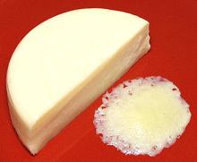
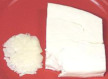
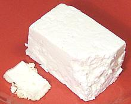
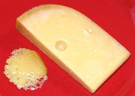
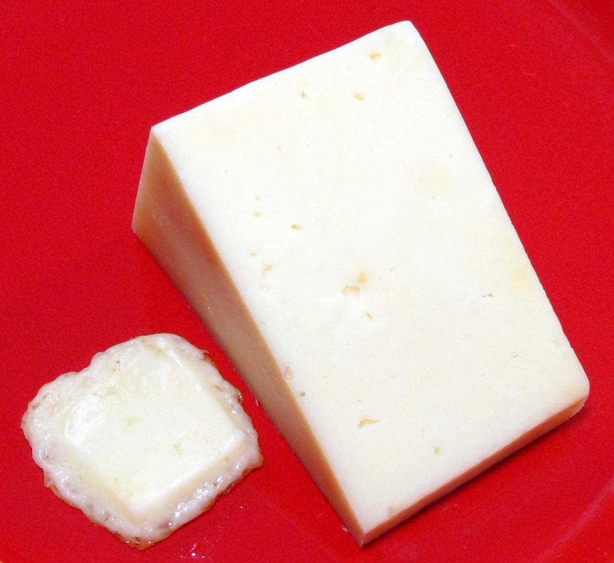
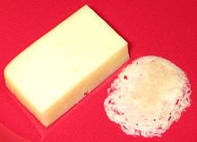
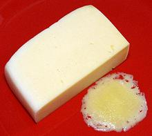
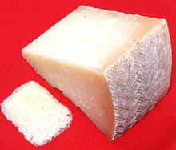

Africa
Americas
North
Mexico
Central
South
Europe
Armenia
British Isles
Georgia
France
Italy
Germany &
Austria
Greece &
Balkans
Hungary
Netherlands
Poland, Baltic
Russia
Scandinavia
& Finland
Spain &
Portugal
Switzerland
Turkey
India
Near &
Middle East
SAFARI
Users
International Varieties of Cheese
Given many hundreds of different cheeses, we'll not try to list them all here. We will concentrate on cheeses widely and affordably available in North America (or at least here in Southern California). $20/pound gourmet cheeses and cheeses very hard to find in North America will be here only if they are particularly interesting.
Most of the cheeses listed here were found in the normal multi-ethnic markets that abound here in Los Angeles, not from specialty cheese shops, gourmet vendors or on-line, so prices listed may be very low compared to those sources.
The fanciest I got was Trader Joe's - nothing here was from Whole Foods or other higher end yuppie outlets, but you should easily find most of these cheeses at such markets.
Cheeses are listed by region of origin. Cheeses that are now made worldwide are listed primarily under the region they originated from.
Africa
Evidence of cheese making in Egypt dates from about 5200 years ago.
Areesh / Karish
- (Egypt)This is a soft cheese made from yogurt which has a flavor similar to ricotta. The yogurt is heated slowly until it curdles and separates. It is then drained. The product is similar to Leban / Lebneh made in the Levant. A major use is in making Shanklish where it is fermented and aged until firm to hard, and Mish, where it is fermentd in a pot and remains spreadable.
Istanbolli
- (Egypt)A soft white spreading cheese with a strong flavor of green peppers but no significant amount of heat. It is quite salty so keeps well in the refrigerator. Fried, it softens and sags but does not really melt. It doesn't get stringy and exudes almost no oil. It's strong green pepper flavor makes it unsuitable for most cheese recipes, but it is a good spread for bread or crackers. The photo specimen was made in Egypt from buffalo milk.
Mish
- (Egypt) A soft, salty fermented spreading cheese with a strong flavor. It is
very important to the diet of Egyptian peasants, and something like it
may have been made there for over 5000 years. It is usually made
in the home, fermented in a pot, starting with a yogurt cheese like
Areesh and using a previous batch as a starter. It is fermented for
months or years. The jar may be opened often to use the Mish and/or to
add more of the feedstock cheese. Small worms may develop in the Mish
but are not considered dangerous.
Photo by Reem Al-Kashif (color corrected) distributed under
license Creative Commons
Attribution-ShareAlike v4.0 International.
A soft, salty fermented spreading cheese with a strong flavor. It is
very important to the diet of Egyptian peasants, and something like it
may have been made there for over 5000 years. It is usually made
in the home, fermented in a pot, starting with a yogurt cheese like
Areesh and using a previous batch as a starter. It is fermented for
months or years. The jar may be opened often to use the Mish and/or to
add more of the feedstock cheese. Small worms may develop in the Mish
but are not considered dangerous.
Photo by Reem Al-Kashif (color corrected) distributed under
license Creative Commons
Attribution-ShareAlike v4.0 International.
Romy
- [Roumy, Ras; (Egypt)]This is the major hard cheese of Egypt. Romy meant "foreigner", and the cheese was so called because it was originally made by the Turks in Egypt. In Alexandria it was called Torky. It is a hard salty cheese made from whole milk, cow or cow and buffalo, often with whole peppercorns added. After aging 3 to 4 months it is ready to be sliced and is a popular breakfast cheese in Egypt.
"Medium Aged Romy" is aged for about 3 years and is a good grating
cheese. "Old Aged Romy" is 8 to 12 years. With age it becomes sharper
and more crumbly. When fried, Romy softens and exudes a fair amount of
oil, but holds its shape, even if fried until well brown and crisp. The
photo speciman is medium aged, purchased from a large multi-ethnic market
in Los Angeles (Sunland) for 2019 US $8.99 / pound.
Americas - North
The United States and Canada, once home only to dismal factory cheeses, are now major producers of authentic and artisan cheeses rivaling those of Europe. Some are made using the traditional European names, which really pisses off the Europeans, so these names are increasingly prefixed by "American". Of course, we still make our traditional factory "cheese products" too, some of which are popular abroad as well.
American Cheese
- (United States)This "processed cheese" was originally made from a blend of cheeses, generally colby and cheddar, but is now manufactured from components, generally milk, whey, milkfat, milk protein concentrate, whey protein concentrate, salt. Together, these meet a Federal definition, though each manufacturer has a slightly different formula. Those labeled "American Cheese" and "American Process Cheese" are fairly similar to real cheese, while those labeled "American Cheese Food" or "American Cheese Product" are more like Velveeta and Cheez Whiz.
Color can range from white to orange depending on how much annatto or
food coloring is used. "Individually wrapped" products (photo) are the
least natural. They aren't actually "wrapped", the contents
is "cast in place", poured into the wrappers and solidified there. Blocks
and sliced blocks more approximate real cheese. American Cheese is valued
for it's neat slicing and good melting properties and is mainly used for
sandwiches, both hot and cold.
Cheddar - Mild Industrial Cheddar
A dense, firm, undistinguished cheese with little tang and almost always
dyed yellow/orange. It melts completely, exuding a moderate amount of
oil, but is a bit rubbery, and when cooled it is quite rubbery. To
compensate, it is usually coarsely grated before sprinkling on things
for melting in the oven or under the broiler. It's completely unusable
for applications like
Welsh Rabbit but is more
flavorful than American Cheese in sandwiches. It is often grated
for use in tacos and the like.
Colby
- [Colby Cheddar (obs.), Longhorn Cheddar, (Wisconsin USA)]First produced in Colby, Wisconsin, this is a semi-hard, mild, washed curd cheese that is not cheddared and is normally dyed orange. It is most often made in long cylinders (thus the name "longhorn") and sold in half round blocks. It is often combined with the similarly made Monterey Jack cheese to produce a marbled product called "Colby Jack".
Colby is a bit Velveeta-like in flavor and texture and can be used
similarly but is also used as a table cheese and grated as a brownable
topping for dishes finished in the broiler or oven. It melts well, exuding
a moderate amount of oil and doesn't become too rubbery when it cools.
Colby doesn't keep well so should be used within 7 days of opening the
package. Pasteurized cow milk, cheese culture, salt, enzymes, annatto.
Cottage Cheese
Cottage cheese was originally made in many small farm houses as a fresh, unpressed washed curd cheese retaining a significant amount of whey. There are two traditional processes, one using only milk culture to produce slightly acidic "Small Curd", and the other using culture and rennet to produce a less acid "Large Curd" cheese.
You will have a hard time determining these processes from tubs
of commercial cottage cheese, as they are now highly industrialized
products made by modified processes from mixes of milk, cream and
whey, with lots of additives which may include citric acid, carrageenan,
mono and diglycerides, polysorbate 80 guar gum, locust bean gum, xanthan
gum, maltodextrin, dextrose, enzymes and various other substances. The
photo shows commercial small curd to the left, large curd to the right.
Cream Cheese, American
This was originally made from cow milk and cream, but has become an industrial product. It is often sold in boxed foil wrapped blocks, but also in tubs. It is mild and spreadably soft, and when heated becomes very soft, but does not flow or seep oil (small slice on the left in photo is browned on the underside but held its shape). The most common brand is Kraft's Philadelphia Cream Cheese. Ingredients for "Regular" are: Pasteurized nonfat cow milk and milkfat, cheese culture, whey protein concentrate, salt, guar gum, carob bean gum, 32% fat.
Farmers Cheese
- [Hoop Cheese (a little firmer)]This is basically cottage cheese (small curd process) with the liquid squeezed out of it. Squeeze it even more and you get Hoop Cheese. Squeeze a little less and you get Pot Cheese. It is fairly soft but somewhat crumbly. This cheese softens but does not melt when heated, keeping its shape even until it starts to burn, as in the photo.
Farmers cheese, once scarce here, has become very common in Southern
California due to the growing population from Eastern Europe. It is
interchangeable with cheeses from that region and is much used for
filling pastries, pierogi / piroshke and for similar uses. It is
perishable so refrigerate and use within a week of opening. That most
common here in Los Angeles is from Lifeway. Ing: Cultured pasteurized
low fat milk, potassium sorbate.
Karoun Caliornia Cheese
- [California]
An unripened, lightly salted whole milk cheese made in California by a
leading manufacturer of Levantine, Anatolian and Caucasian cheeses.
It has a light, squeeky chew and good flavor. It softens, but does not
melt, and exudes no liquid or oil. Purchased from a large multi-ethnic
market in Los Angeles (Sunland) for 2019 US $4.99 / pound. Cultured
pasteurized Grade A whole milk, calcium, natural flavor, salt, non-animal
kosher rennet.
Monterey Jack
- [Jack Cheese, Queso Monterey (California)]Originally made by Franciscan monks in Monterey California, this cheese was put into production by David Jack, thus "Jack Cheese". Cultured whole milk, salt, enzymes. Because it is very low in tyramine, Monterey Jack is considered one of the safer cheeses for migraine sufferers.
This cheese melts particularly well and is not too rubbery when cooled. It is normally sold as a mild, white, semi-hard cheese with about one month of age, but there are variations:
|
Mozzarella - Fresh California
This cheese is made up into balls about 1-1/2 inches in diameter, weighing just over 1 ounce and packed in plastic bags or tubs floating in whey. It is called "Mozzarella" here in California, but is actually pretty much identical to the Italian Bocconcini.
The texture is very soft with just a little of the fibrousness we associate with mozzarella and much milder than regular American Mozzarella. It melts very smoothly, exuding water rather than oil, and cools with a little more of the rubberiness we normally associate with mozzarella. Pasteurized cow milk, starter culture, salt, vegetable rennet.
I do not recommend fresh mozzarella for cooking because American recipes are all designed for the regular stuff, so fresh mozzarella would be bland, expensive and have little texture.
It is my understanding that mozzarella bars have sprung up in the
more yuppified districts of Southern California (2008), and various dishes
featuring fresh mozzarellas (including buffalo milk versions) can be had
there at exorbitant prices, but I seldom stray into those districts.
A couple years ago they were very rare, but I now see plastic tubs of
these balls in most of the markets I shop at (2013).
Muenster
- (USA - Michigan, Wisconsin, California, etc.)
This American cheese is remotely patterned after French
Munster. It is very popular in North America and
ranges from bland to as sharp as a young jack cheese. It is used on
cheese plates, but is also widely used in dishes requiring melted cheese.
It melts very well, exuding modest oil. A smooth, pale yellow cheese,
it is generally made in loaves, the outside colored orange by paprika or
another vegetable dye.
Neufchâtel - American
American Neufchâtel was invented in 1872 in an imperfect attempt to make a cheese like French Neufchâtel. It was the first American cream cheese and is still sold as a lower fat substitute for regular American cream cheese.
Pinconning
- (Michigan USA)This cheese, developed in Pinconning Michigan, is very similar to Colby but the formula is a little different, allowing it to be aged. It ranges from mild to extra sharp depending on length of aging. A 10 year "super sharp" is available only by direct order from the Pinconning Cheese Company. Pinconning has a rich, creamy flavor and texture and is used as a table cheese in place of Colby or cheddar. It is also used for mac-and-cheese, in soufflés, and as a base material for manufacturing cheese spreads.
The photo shows 10 year Extra Sharp to the left and Medium Sharp to
the right. The extra sharp is somewhat crumbly and doesn't seem related
to Colby at all. The medium sharp does retain some of its Colby
heritage. Both melt smoothly. The medium seems to loose a bit of flavor,
but does not become rubbery. The extra sharp melts to a thin oily liquid
and is crumbly when cooled, but retains flavor well. Medium 2008
US $6.19/pound, 10 year $13.49/pound.
Velveeta
- [Velveta (Germany), Kraft Cheddar Cheese (Australia), (Kraft Foods, U.S. & elsewhere)]
A "pasteurized process cheese product" (it contains less than 51% cheese
so can't legally be called a "processed cheese food"). It melts, easily
and evenly, to a creamy consistency. Many claim it's the best product to
use in the ever popular American macaroni and cheese, but many also
complain it isn't as good as it used to be. Velveeta was invented in
1918 by Swiss immigrant Emil Frey, so it's not all America's fault. The
texture is smooth and creamy, soft but firm enough to slice. It is currently
sold in the U.S., Canada, Hong Kong, Philippines, South Korea, Australia and
Germany. This product does not need to be refrigerated after opening.
Americas - Mexico & Central America
Little cheese is imported from Mexico due to health considerations (it's mostly fresh cheeses), but many authentic Mexican type cheeses are now produced in high volume here in Southern California where there is obvious demand.
Cotija
- [Queso Cotija, (Mexico, California)]
Named for the Mexican town of Cotija, Michoacan, this is a stiff, crumbly
cheese with modest tanginess and quite a bit of salt, aged
from 3 months to a year. It is used mainly as a crumbled topping and in
salads, because it not only doesn't melt, it hardly even softens. Avoid
it for anything that requires a cheese that melts gracefully. There is
also a softer version, Tajo Cheese, with less salt and less age.
Pasteurized part skim cultured cow milk, salt, enzymes.
Queso Añejo
- See Queso EnchiladaQueso Asedero
"Asedero" means "roasted", from it's usage as a melting cheese. Asederos have the stringiness when melted that's considered essential for many Mexican dishes. The two most available Queso Asederos are Queso Oaxaca and Quesadilla. Reasonable, but not exact, substitutes are Monterey Jack, Mozzarella and Provolone.
Queso Blanco
[Mexico, California]
Often sold in large loaf sized blocks, this cheese is similar to
Queso Fresco, except, when traditionally
made it is coagulated not with renet, but with acid, as is Indian Paneer.
Today, the acid may be helped by a microbic rennet, but it should still
be ol vegetarian. This cheese softens, but does not melt. It exudes almost
no water and almost no oil. Cultured pasteurized grade A milk, calcium
chloride, non-animal Kosher rennet, salt, vinegar.
Queso Duro Viejo
- (El Salvador)
This is a mild table cheese. It doesn't really melt, but softens some
and exudes some oil. It is aged 1 to 6 months. Perla brand, 2018 US
$8.57 / pound, sold in 14 ounce blocks.
Queso Enchilada
- [Añejo enchilado, Queso añejo: (Mexico, California)]This firm aged cheese, both sliceable and grateable, is coated with a paste made from red chilis to inhibits mold during aging. Originally it was made from skimmed goat's milk, but nearly all is now made from skimmed cow's milk. It is mild, but has a little of the tang of an aged cheese. It is usually used as a grated topping because it doesn't really melt.
Heated, it becomes very soft but does not flow. When it cools it
becomes firm but not rubbery. Pasteurized cow milk and skim cow milk,
sea salt, paprika, enzymes. Actually that "paprika" is dried New Mexico
chili or similar. This cheese is made in 4 inch wheels as in the photo,
and in blocks.
Queso Fresco
- (Mexico, California)Literally "fresh cheese". A part skim milk cheese that's very soft, yet crumbly, with a very mild milk-like flavor and just a trace of tartness. Unlike Queso Blanco, it is traditionally made using rennet, which may be animal rennet. While widely made in Mexico, that available in California is made north of the border due to health issues. Even here in Los Angeles there have been rare outbreaks of listeriosis resulting from sanitation lapses within small cheese makers.
When heated, it exudes a lot of water, and gets very soft and bubbly
but doesn't actually melt. It is sold in 4 inch wheels as in the photo,
and as blocks. Cow milk and skim cow milk, sea salt, culture, enzymes.
Queso Fresco Cremoso
- (Mexico, California)A whole milk "Fresh Cheese" that's moderately soft with a mild flavor and just a trace of tartness. It is not at all crumbly. While a Mexican type cheese, that available in California is made north of the border due to health issues. This one was made in San Jose, California.
When
heated, it exudes almost no water, and gets very soft, but will brown
without actually melting. It is sold in 4 inch wheels as in the photo.
Pasteurized cow milk, salt, enzymes, 21% fat, 2014 US $3.66/pound.
Queso Morolique
- (El Salvador)
This is a mild table cheese. It doesn't really melt, but softens some
and exudes very little oil. Perla brand, 2018 US $8.57 / pound, sold in
14 ounce blocks.
Manchego
 This Mexican cheese is not to be confused with the Manchego of Spain. This one is more related to Monterey Jack. It is fairly firm and melts very well, exuding little oil. It has been aged sufficiently to develop some tang, but is quite mild. It is used as both a table cheese and for cooking. Pasteurized part skim cow milk, sea salt, enzymes.
Oaxaca
- [Queso asadero]
This Mexican cheese is now manufactured and widely available here in
Southern California. Similarly to mozzarella, this mildly tangy cheese
has been stretched until fibrous, then knotted into a lump. It melts
very smoothly, exuding very little oil, and when melted strings well when
pulled, considered a necessity for a Mexican melting cheese. At certain
temperatures it can seem just a bit rubbery. The photo specimen was
about 4-1/2 inches diameter and weighed 12 ounces. Cultured pasteurized
milk, salt, enzymes and sodium citrate.
Panela
- [Queso Panela, Queso Canasta, Quesillo, (Mexico, California, also Paraguay, Nicaragua, Bolivia, Chile and Ecuador)]
This is a white fresh cheese but differs significantly from Queso Fresco It has a mild fresh cheese flavor but firm enough to slice well. It can be crumbled, but not as easily as Fresco. The cheese is made in 4 inch wheels, the outer surface of which are textured to resemble the texture imparted by the little baskets in which it was traditionally made.
This cheese is often diced or crumbled for salads, enchiladas and tacos but is also sometimes cut into slices and fried until lightly browned as a snack. When heated it softens moderately but holds it's shape, even until browned, exuding neither water nor oil. Pasteurized part skim cow milk, salt, enzymes. The photo specimen was a 4 inch wheel weighing 10 ounces at 2013 US $4.00/pound.
This cheese seems to me a good substitute for Indian Paneer, though
it is made with an enzyme coagulant rather than lemon juice. It is not
to be confused with the Panela of Columbia, which is a similarly
shaped cake of unrefined sugar cane juice.
Quesadilla / Asadero
 As the name implies, this is cheese for Quesadillas, tortillas folded
over into a half circle with cheese and other ingredients between the
layers. Of primary importance is how the cheese melts, and it melts
easily and very smoothly with little oil exuded. When melted it is
"stringy", considered a necessity for Mexican melting cheeses. This
does mean it becomes a little rubbery when cooled, but not badly - and
you're supposed to eat it while it's hot and melted anyway. This
cheese is mild but has a good cheese flavor. It is similar to
Queso Oaxaca but not stretched and formed in blocks. Pasteurized milk,
skim milk, sea salt, enzymes, annatto extract (color).
As the name implies, this is cheese for Quesadillas, tortillas folded
over into a half circle with cheese and other ingredients between the
layers. Of primary importance is how the cheese melts, and it melts
easily and very smoothly with little oil exuded. When melted it is
"stringy", considered a necessity for Mexican melting cheeses. This
does mean it becomes a little rubbery when cooled, but not badly - and
you're supposed to eat it while it's hot and melted anyway. This
cheese is mild but has a good cheese flavor. It is similar to
Queso Oaxaca but not stretched and formed in blocks. Pasteurized milk,
skim milk, sea salt, enzymes, annatto extract (color).
Requesón
- [Requeijão (Portuguese); (Mexico, Portugal, Brazil, Spain, California)]
This is a Hispanic cheese similar to Italian Ricotta. It is made with
about 10% milk added to the whey left from making other cheeses. It is
creamy, spreadable, low fat and does not melt at all.
Americas - South
Panquehue
- (Chile - Andean Aconcagua)
A rather creamy, buttery, semi-soft, mildly tangy "farmstead cheese" from
Chile. It is the most popular cheese in Chile, and in 2005 became the
first Chilean cheese imported into the United States. It melts smoothly,
exuding moderate oil. Pasteurized cow milk, salt, calcium chloride,
microbial rennet, dairy cultures, and has an invisible wax coating.
Reggianito
- (Argentina)
This cheese originated with Italian immigrants to Argentina, and is the
longest aged cheese made in South America (5 to 6 months). Patterned
after Italian Reggiano, it is called Reggianito because the wheels weigh
15 pounds rather than the 80 pounds typical of the Italian cheese. It is
a hard grating cheese with a slightly granular texture and slightly
saltier than the Italian cheese. The photo specimen was purchased from a
large multi-ethnic market in Los Angeles for 2015 US $6.99 per pound.
Made from pasteurized cow milk. Reggianito, similarly to the Italian
cheese, melts reluctantly but well, without becoming runny, but it does
exude a fair amount of oil. It is sliceable, but also grates very well.
Europe - Anatolia & Caucasus
This region includes Turkey, Armenia, Georgia and Azerbaijan. Yes, some of these countries just don't get along, not even a little, but they share a culinary domain, including cheeses, so I'm lumping them here and they can just learn to deal with it.
Some authentic Armenian and Georgian cheeses are made in volume here in Southern California, (Glendale, California is "the Western Capital of Armenia"). Production of cheese in Armenia was discouraged during the Soviet era, when Lori (Russian Cheese) dominated. A joint Armenia - US Department of Agriculture program has resulted in greatly increased production of specialty Armenian cheeses, many of which are now (2019) imported into Southern California.
Turkey does export large amounts of cheese, particularly "White Cheese" which is much like Bulgarian Sirene (Bulgarian Feta in the U.S.). Azerbaijan is not at all noted for cheese, but interest is increasing rapidly there.
Alashkert Cheese
- (Armenia)
A soft, non-crumbly brine soaked cheese, made in wheels about 3-3/4 inches
thick. It is fresh, mild, and moderately salty, with good aroma and flavor.
This cheese melts very easily and smoothly, exuding very little oil and no
water. The photo specimen was imported branded Ararat, though the "Alashkert"
name and formula belongs to the Dustr Melania (Daughter Melania) cheese
factory in Lori Province, northern Armenia. It is a new cheese developed in
cooperation with the U.S. Department of Agricultue, and has found immediate
popularity. Whole pasteurized cow milk, starter cultures, rennet, salt,
calcium chloride. Purchased from a large multi-ethnic market in Los Angeles
(Sunland) for 2021 US $8.49 / pound.
Armenian String Cheese
- (Armenia, California)This is a moderately firm white cheese that is pulled into an endless loop until it is formed into yarns that have a stringy texture. The yarns are then twisted up into a hank and vacuum packed for distribution. This cheese, made by several Armenian dairies here in Los Angeles, differs somewhat from the more traditional Chechil Cheese (see below).
This cheese is very popular as a snack cheese, and so much better than the sticks of "string cheese" sold by major brands in the supermarkets. Armenian String Cheese can also be found smoked, similar to smoked mozzarella, and is sometimes packed with olive oil and herbs as well as with and without nigella seeds.
The photo hank weighed 1 pound and was 7-1/2 inches by 3 inches,
cultured pasteurized milk, kosher rennet, salt and nigella seeds. It
was made here in Los Angeles by Karoun Dairies, but we have several
other fine manufacturers of this cheese here. All their products are
very similar.
Armenian Sweet Cheese
- (Armenia, California)
A very fresh soft cheese used mainly in Armenian pastries. "Sweet" means it has very little salt and no tang from fermentation, which means it's very mild in flavor and highly perishable. This cheese melts completely, exuding no oil, and is just faintly rubbery when cooled, but the flavor is enhanced by the melting.
The photo specimen was made in Los Angeles. Whole pasteurized milk,
vegetable rennet, salt.
Chanakh Cheese
- (Armenia)
A soft, non-crumbly cheese soaked in brine, much used as a table cheese
to accompany fruits, vegetables, and wine. It is fresh, mild, and salty,
with a lightly fermented aroma and flavor. This cheese melts to a thin
liquid almost instantly, exuding neither oil nor water. The photo
specimen was Golden Goat brand, made in Armenia: whole pasteurized cow
milk, salt, cheese cultures. Purchased from a large multi-ethnic market
in Los Angeles (Sunland).
Chechil Cheese
- [Chechil, Husats, Tel (Armenia, Georgia); çeçil, tel peyniri (Turkey)]A rather firm white cheese that is pulled into an endless loop until it is formed into yarns made of hair-like fibers. It is matured in brine and often smoked. The photo specimens, from Georgia, were formed into braids and vacuum packed. This cheese is much tougher and stretchier than the Armenian String Cheese we are acustomed to here in California, the fibers are much finer, like hair, and it is saltier. This cheese does not melt. It's mainly a snack cheese, and in Russia is commonly served with beer.
Typically, hanks weigh 3.5 ounces each and are 8 inches long and
1-1/2 inches wide. The photo specimens were purchased from a large
multi-ethnic market in Los Angeles (Sunland) for 2018 US $11.99 per
pound. Pasteurized whole milk, cheese cultures, salt, enzyme. The
smoked version was smoked over beechwood chips.
Chechil Cheese
- [Chechil (Armenia)]
This form of Chechil Cheese is sold in block form, brine cured and aged.
It has a good tang from the ageing. It does melt, exuding quite a bit of
oil and bubbling from water from the brining. The photo specimen was
purchased from a large multi-ethnic market in Los Angeles (Sunland) for
2018 US $11.99 per pound. Product of Armenia: pasteurized cow milk,
cheese cultures, salt.
Dzor Cheese
- (Armenia)
A firm aged goat cheese from the Vayots Dzor region in Armenia. Goat
cheese was almost unknown in Armenia until 2005 when Golden Goat
started production with Armenian goats cross bred with American goats
which produced up to 3 times as much milk as pure Armenian goats.
This cheese has a good goat tang and melts smoothly exuding only a
little oil. The photo specimen was Golden Goat brand, made in Armenia:
whole pasteurized whole goat milk, cheese cultures, salt. The photo
specimen was purchased from a large multi-ethnic market in Los Angeles
(Sunland) for 2019 US $8.69 / pound.
Erebuni Cheese
- (Armenia)A semi-soft salty, cheese including herbal flakes (possibly green
chili). It is named for the Erebuni district of Yerevan, Armenia,
where the ancient Erebuni fortress is. I have used this lightly tangy
cheese instead of Feta in salads, and it worked very well. It's firmer
than Feta and can be sliced into small dice which hold their shape, but
crumble easily to the fork. This cheese does not melt, but softens,
exuding no oil or water. The photo specimen was Golden Goat brand,
made in Armenia: whole pasteurized cow milk, cheese cultures, salt,
herbs. Purchased from a large multi-ethnic market in Los Angeles
(Sunland) for 2019 US $6.59 / pound.
Gladzor Cheese
- (Armenia)A firm salty cheese including flakes of red and green chili but with
very little heat. It is named for the town of Gladzor in the Vayots Dzor
region of Armenia. This cheese does not melt, but softens and exudes a
little oil. The photo specimen was Golden Goat brand, made in Armenia:
whole pasteurized milk, (goat and cow), bacteial cheese cultures, salt,
herbs. Purchased from a large multi-ethnic market in Los Angeles
(Sunland).
Horadz Panir
- [Armenia]This cheese was Ararat brand, with "Horadz Panir" in both Roman and Armenian characters, but was actually made in Bulgaria, a major center for white cheese production. The label said "100% Sheep's Milk - Sharp & Aged", but it's a little "sanitized" compared to the traditional Armenian method, which is to pack the sheep cheese in a clay jar and bury it. That product comes out considerably more smelly. It is often eaten with Lavash bread.
This cheese is very crumbly, much like a Turkish white Tulum, but
that cheese melts. This one softens and releases a moderate amount of
oil, but does not melt. The photo specimen did not brown on the bottom
because the cheese contains too much water. The photo specimen was
purchased from a large multi-ethnic market in Los Angeles (Sunland)
for 2017 US $4.99 / pound.
Imeruli
- [Imeritian; (Georgia)]
Named for the Imeruli region in West Central Georgia, this is a fresh
white cheese, aged about 2 days. It is variously made and may be a bit
crumbly, or have a lot of holes. It is not much available in North
America, but it's not difficult to make it yourself. Whole cow milk,
rennet, salt.
Photo from Georgian
Recipes, distributed under license Creative Commons
Attribution-ShareAlike v3.0 Unported.
Kasar
- [(Turkey); Kasseri (Greek)]A yellow sheep milk hard cheese made in central Anatolia. It is also sometimes made with cow milk or a mixture of sheep and cow. It is traditionally put up in cylindrical molds and aged for at least a month, but aging in bee's wax is now being done. Traditionally raw milk was used with the cheese cultured by the milk's own flora, but today it is made from pasteurized milk using yogurt as a starter. Kasar is a meltable cheese used in recipes, but is also used as a table cheese. The photo is actually of Bulgarian Kasseri, but Bulgaria has very close culinary ties with Turkey.
Eski Kasar (old Kasar) is put up in sacks and aged 6 months in an
ice house. If made from pure sheep milk it can be kept for up to
3 years.
Lori
- [Russian Cheese (Armenia, California)
This semi-soft, pungent, somewhat salty cheese has a sort of spongy
texture (lots of small holes) and melts very smoothly, exuding very
little oil. The photo specimen was from a block about 5 by 5-1/4 inches
by about 12 inches long. Lori is a region in northern Armenia, but this
block was probably made in Los Angeles, as we have several manufacturers
here. This seems to be pretty much the same as Russian Cheese
(Rossiiski syr).
Sulguni
- [Suluguni; (Georgia, California)]Typical of the highly respected Georgian cuisine, this firm white cheese is very popular in Georgia, Russia, Armenia and Southern California. It is similar to mozzarella but a little softer and with a smooth texture (mozzarella is stringy from pulling and kneading). It melts very well. In Georgia it is often just sliced, coated with flour and fried, and is also used in making cheese bread.
In California it is commonly made up into 1 pound 5-1/4 inch wheels
which are also popular smoked. The photo shows a wedge of smoked, a
wedge of regular, and a piece melted. Typically part skim milk, enzymes,
salt, bacterial rennet (Georgian production would likely use animal
rennet) 18% fat, 0.61% sodium. Subst: standard market mozzarella
(expensive fresh mozzarella doesn't work well).
Tulum, White
- [Tulumu, Tulum paynin (Turkey)]
This raw sheep and/or goat milk cheese is traditionally ripened in
goatskin bags called "tulum", thus the name of the cheese. White
crumbly tulum is characteristic of the eastern regions of Turkey.
The taste is herbal, slightly sour and moderately salty. This cheese
melts well. Feta (Turkish "white cheese") would be a suitable substitute
in salads, but not in cooked dishes (feta doesn't melt).
Tulum, Yellow
- [Tulumu, tulum paynin (Turkey)]
While the majority of tulum cheeses are white, yellow versions that are
firmer and tangier and saltier are also made, mostly in the western
regions of Turkey. Made from raw sheep and/or goat milk and aged in
goatskin bags, this cheese melts well.
Vernashen Cheese
- (Armenia)
This cheese is soft and spreadable, but quite rich with a distinct aged
tang. It is produced in Armenia, named for the region noted for red
semi-sweet Vernashen wine. It is Great Masis brand, produced by Golden
Goat Cheese Factory. Pasteurized whole milk, cheese cultures,
salt. It was purchased from a large multi-ethnic market in Los Angeles
(Sunland) for 2020 US $7.29.
White Cheese
- [Beyaz panir; (Turkey)]
While this term can be variously used, it is currently being used to indicate Feta type cheeses made outside of Greece. After a long, hard fought legal battle against Denmark, a major producer of this type of cheese, the EU gave Greece a monopoly on the word "Feta". Some consider this unfair, as this cheese has been made for thousands of years throughout Southeastern Europe and Anatolia.
Turkey is also a major producer of this type cheese, but is not
affected by this ruling. Turkey is not yet a part of the EU, but no
matter - the Turks have always called theirs "White Cheese".
Yeghegnadzor Cheese
- [Yeghegnadzor; (Armenia)]
This goat cheese is soft spreadable, with a sharp salty taste. It is
a "steamed" cheese. Product of Armenia: Pasteurized whole goat milk,
cheese cultures, salt, and an undeclared herb. It was purchased from
a large multi-ethnic market in Los Angeles (Sunland) for 2019 US $12.99
/ pound.
Europe - British Isles
Cheddar - Natural
- (England and everywhere)This is a traditional English cheese, the prototype of cheeses now made in England, United States, Canada, Ireland, New Zealand and elsewhere. It is dense and firm, with taste varying from mild to extra sharp, and texture from smooth to crumbly, depending on length of aging. It can range from white to orange depending on the amount of annatto coloring included.
Good Natural Cheddar melts smoothly and almost to a liquid - not at
all rubbery. It cools to a somewhat grainy texture, again, not
at all rubbery. The photo specimen was England Coastal Cheddar, made
from Pasteurized milk, cheese culture, salt, vegetable rennet, aged
a minimum of 16 months. It melted quickly and smoothly, almost to a
liquid, exuding moderate oil, 32% fat, 2013 US $7.49/pound.
Cheshire - Farmhouse
- (England, county Cheshire and nearby counties)
This is the earliest recorded cheese made in England. It is
a firm, somewhat crumbly cheese, but today is made less firm than in
the past when it was supplies for British warships (1758) and needed to
stand up to rough transportation and long storage. Most production is
"white" in the photo, but some "red" (colored with annatto) is made
and some "blue", infected with blue mold, similar to Stilton.
Cheshire melts slowly and exudes quit a bit of oil. Pasteurized cow milk,
cheese cultures, rennet, salt; 2014 US $3.99/pound (special price).
Cotswold
- (England)
Made in Gloucestershire, England, Cotswold is actually
Double Gloucester with chives and scallions mixed in.
The photo specimen melted fairly smoothly, exuding a lot of oil, but
also a lot of moisture. Double Gloucester (Pasteurized cow milk, salt,
annatto, cheese cultures, vegetable rennet), rehydrated onion, freeze
dried chives; 32% fat, 2015 US $6.69/pound.
Derby
- (England - Derbyshire)
Made in Derbyshire, England, this is a mild, buttery, semi-firm cheese,
similar to cheddar but softer and aged for a shorter time - one month
to 6 months depending on firmness desired. It is naturally a cream or
pale golden color, but the most common variety is mixed with sage,
giving it a mottled green and cream color. There is also a port wine
version. The photo specimen melted enthusiastically, exuding very
moderate oil. Pasteurized cow milk, salt, cheese cultures, vegetarian
rennet, dried sage leaves, chlorophyll. Purchased from a large
multi-ethnic market in Los Angeles (Sunland).
Dubliner
- (Ireland, County Cork)
Made by Carbery from a secret recipe, this medium hard, tangy cheese
melts very well, exuding a fair amount of oil. Flavor is described
as sharp cheddar with tones of Swiss and Parmesan. Pasteurized milk,
cheese cultures, salt, enzymes, 32% fat, 2010 US $8.44/pound.
Gamekeeper
- (England - Nottingham)
This cheese is made up of Blue Shropshire Cheese layered with and embedded
with mild Cheddar. In my opinion it is a really fine cheese plate cheese,
though perhaps a little strong for those with "refined tastes". The name
"Gamekeeper" is a trademark of Cropwell Bishop Creamery. Cheddar Cheese
(63%): milk, salt, dairy cultures, vegetarian rennet - Blue Shropshire
Cheese (37%): Milk, Salt, Color E160B, vegetarian rennet, dairy cultures,
2014 US $5.99/pound.
Gloucester - Single, Double, Cotswold, Huntsman
- (England)Made in Gloucestershire, England, Gloucester Cheese comes in four versions, Single, Double, Cotswold and Huntsman / Stilchester. All are semi-hard cheeses. Single is slightly crumbly, and is sold mostly in the region. Double has more age, a stronger flavor and is firmer, while Cotswold has chives and scallions mixed in. Huntsman has layers of Double Gloucester and Stilton.
The photo specimen of Double Gloucester was fairly soft, with a
pleasant flavor and good aged tang. Originally, double gloucester was
colored with Lady's Bedstraw, but annatto
is now used. The photo specimen melted very easily and very smoothly,
exuding a lot of oil and a fair amount of moisture, becoming almost
completely transparent. Pasteurized cow milk,
salt, cheese cultures, vegetable rennet, annatto (color). Purchased
from a large multi-ethnic market in Los Angeles for 2016 US $6.19/pound.
Gloucester - Double with Chives & Onion
- (England)
Made in Gloucestershire, England, this cheese was very crumbly and
very pungent. It melts to a paste, exuding lots of oil. Pasteurized
cow milk, onion granules and dried chives, vegetable rennet, cheese
cultures, annatto (color). Purchased from a large multi-ethnic market
in Los Angeles for 2017 US $3.99/pound.
Irish Cheddar, Mature
- (Ireland)
This is a typical matured Irish Cheddar. It melts easily and smoothly,
exuding quite a bit of oil. Purchased from a large multi-ethnic market
in Los Angeles (Sunland) for 2019 US $5.99 / pound.Wexford Creamery,
Wexford, Ireland. Pasteurized whole milk, salt, starter cultures,
rennet. Milk fat 34%.
Irish Cheddar with Porter
- (Ireland)
Striking in appearance, this cheese tastes pretty much like regular
cheddar, though it has a vaguely chocolatey flavor from dark Irish
beer. At 2010 US $11/pound, use it where you want a decorative - use
regular cheddar otherwise. Once you open this, eat it soon - it goes
to mold like nobody's business.
Red Leicester
- [Leicestershire] (England - Leicestershire)
Originally called Leicestershire and colored with carrot or beet juice,
it is now colored with annatto. It was renamed during WWII to
differentiate it from "White Leicester", a national wartime recipe.
Red Leicester is made similarly to cheddar, but is more crumbly, and
is very dependent on age for its tang and texture. The photo specimen,
from England, was aged over 15 months. It melts smoothly, exuding a
fair amount of oil. 2019 US $4.99 / pound. Pasteurized milk, salt,
cheese cultures, rennet, annatto (color): 34% fat.
Stilton, Blue
- (England, PDO Derbyshire, Leicestershire, Nottinghamshire)This is England's primary entry for blue cheese, but there is a much less well known White Stilton. The blue is strong smelling and quite pungent, with an edible moldy rind. "Stilton" cannot be made in the village of Stilton because it is outside the PDO region - theirs is called "Village Blue from Stilton". Stilton eaten before bedtime is reputed to produce strange and vivid dreams, confirmed by a 2005 study.
Though used in a few soups, Stilton melts to an ugly crumbly liquid
which never solidifies, and flavor is not improved by melting. Primarily
this is a table cheese eaten with celery sticks and crackers.
Pasteurized cow milk, salt, microbial rennet, cheese cultures, 36% fat,
2010 US $11.49/pound.
Wensleydale
- (England, Wensleydale, North Yorkshire)This cheese was originally made by French monks who moved to England, but Henry VIII dissolved all the monasteries in 1540. It is quite moist, yet crumbly, and has a sweet mild taste with hints of honey. It goes very well with fruit, which is sometimes embedded in it, particularly cranberries or cherries. Plain white Wensleydale is traditionally eaten with apple pie.
Originally, this cheese was mostly a blue cheese, but blue Wensleydale
is very rare today. The monks started with sheep milk, but migrated to
cow milk. Pasteurized cow milk, sugar, cherries, cherry flavor, sunflower
oil, vegetable rennet, cheese cultures; 29% fat, 2013 US $4.39/pound.
Europe - France
Basque Cheese
- (France - Pyrenees)
This is a very firm cheese with excellent aged flavor. It melts smoothly
with medium oil and has an excellent melted taste, but at the price
you'll not be using this as a melting cheese. It'll be strictly on the
cheese plate. The rind is coated with wax which doesn't peel, so it
has to be carefully cut off. The photo specimen is from a mini-wheel
marketed by Trader Joe's at 2013 US $10.99 / pound. Pasteurized sheep
milk, salt, animal rennet, calcium chloride, lactic starter, color:
caramel, annatto.
Boursin
- (France - Normandy)
This is a brand of spreadable Gournay (Normandy) cheese packaged
in small boxes. It is similar to cream cheese but flavored. It was
invented in 1957 by François Boursin to save party guests
from having to add their own herb to fresh cheese. The first and
still most popular is "Garlic and Fine Herbs". It is currently
owned by Bel Brands, the (Laughing Cow company). The photo specimen
was "Manufactured for Bel Brands USA" by Atalanta Corp. in Elizabeth
New Jersey. Ingred: Pasteurized Cultured Milk and Cream, Garlic*,
Salt, White Pepper, Parsley*, Chives*, *Dried.
Brie
- (France, Seine-et-Marne - imitated in Somerset (UK), Wisconsin (US) and elsewhere)
A very soft whole or part skim cow milk cheese with an edible white moldy rind. Proper brie is not available in the U.S. or Australia due to our governments' penchant for protecting us from things we don't need protection from. Brie shipped to the U.S. must be made from pasteurized milk which changes the flavor and texture. In Europe the name "Brie" is protected and limited to a particular region of France but cheeses named "brie" are made worldwide outside of Europe.
This cheese is extremely popular and is almost always eaten plain or spread on crackers or some such. The rind should always be eaten along with the rest. Double and triple cream versions are now made for the yuppie trade but taste a bit more like butter than like cheese.
Brie Noir is a version aged for several months to a year (normal
brie is aged for one month) and the rind has becomes darker and crumbly.
Brillat-Savarin
- (France - Burgundy, Normandy)
A soft, creamy, high fat cheese made in Burgundy and Normandy since
about 1932. It is sold fresh or aged 1 to 2 weeks and is lightly salty
with just a touch of sourness. It is said to pair well with Ale and
Champaign, but not with red wine. The photo specimen is the "Fresh"
version and has not yet formed much of a rind. It was cut from a
typical wheel 4-3/4 inches diameter and 1-3/4 inches thick and weighing
17.6 ounces (1/2 kilo). It was soft and spreadable. A sample melted down
into a puddle and did not firm when cooled. Pasteurized cow milk and
cream, rennet, salt, cultured milk; 33% fat. 2013 US $4.99 / pound
(this may have been a liquidation price due to a major screw-up in the
package labeling). There is a version with significantly more than 2
weeks age called Pierre Robert.
Camembert
- (France - AOM, PDO Normandy)
A soft, creamy surface ripened cheese made from cow's milk, similar to
Brie, but made in small wheels rather than large. Properly, the milk is
unpasteurized, and must be unpasteurized to achieve the designation
"Camambert de Normandie". This causes problems importing into the U.S.
so that shipped here is generally from pasteurized milk and over-aged,
so it is not as runny as it should be. This is a "cheese plate" sort of
cheese, served with crackers and the like. The rind is to be eaten with
the cheese.
Comté
- (France - AOM )
This is the most popular cheese in France, very firm, sliceable,
non-crumbly and traditionally made in 100 pound wheels. Starting in the
12th century it was made by cowherds during their long summer stay in
the Jura mountains and brought to market in the fall. Today, most
Comté is aged from 7 to 18 months. It is dryish, very tangy and
melts smoothly except at the rind. Raw cows milk, salt, animal rennet,
lactic cultures, 45% fat.
Forest Smoked Cheese
- (France )
A brie type soft "Smoked French Cheese", Hickory smoked processed cheese
58% fat. Softe enough to spread - would go well on mild flavored
crackers. GE SAS France 2018 US $5.99 / pound.
Madrigal
- (France )
Made in the Loire Valley, this is a French "Baby Swiss" and is very
similar to Swiss Emmental, possessing a similar sweet nutty flavor and
large "eyes", but its melting properties are significantly different.
It softens but does not flow, in fact the photo specimen was starting
to brown on the bottom and getting a bit dried out, but still no flow.
Pasteurized whole cow milk, cheese cultures, salt, enzymes, 29% fat,
2013 US $7.99 / pound.
Mimolette Française
- [Boule de Lille, Vieux Hollande; (France )]
This French cheese was created under orders of Louis XIVis as a
replacement for imported Edam cheese. It is made by a similar process
but with annatto added to color it orange for differentiation. Whole,
it's a 4 pound a ball that resembles a cantaloupe. It melts smoothly,
exuding little oil, but becomes very stiff when cooled. This cheese is
stiff, smooth and has only a little tang - to me it seems a bit too close
to a hard version of American cheese. Cow milk, salt, lactic starters,
animal rennet, annatto, lysozyne (enzyme from egg white).
Morbier
- (France - AOC Franche-Comté)This is a semi-soft cheese with a distinct line through the middle. This was originally ashes spread over the evening milk to protect it, then morning milk would be poured in to fill the mold. Today it is usually made from one milking and sometimes a vegetable dye is used to form the line. It is normally aged over 60 days.
The aroma is pungent, but the flavor is rich and creamy. There may be
a slight bitter aftertaste. It melts well. Specific Morbiers are AOC
protected, but some are made outside the AOC regions. Raw cows milk,
salt, microbial rennet, cheese cultures, vegetable ash, natamycin,
lisozyne (enzyme from egg white), 2010 US $8.99/pound.
Munster-géromé
- [Munster; (France - AOC specific regions near the Alsace mountains)]
This cheese has been made since at least CE 1371 under a system involving
monasteries and the town of Munster. It is not to be confused with
American Muenster which was rather distantly
patterned after it. It is made from unpasteurized cow milk and the rind
is washed periodically with brine. Small wheels (3 to 5 inches) are
aged for about 5 weeks. Large wheels (5 to 8 inches) 2 to 3 months.
Photo by Zubro distributed under license Creative
Commons
Attribution-ShareAlike 3.0 Unported.
Neufchâtel
This cheese has been made in France since about the 6th century. It is similar to Camembert, with a dry white edible mold rind, but is saltier and sharper. It is usually sold in heart shaped lumps, but also in logs and boxes.
American Neufchâtel was invented in 1872 in an attempt to make
a cheese like French Neufchâtel. It was the first American cream
cheese and is still sold as a lower fat substitute for regular American
cream cheese. Photo by Myrabella distributed under license
Creative Commons
Attribution-ShareAlike 3.0 Unported.
Port Salut
- [Entrammes (France - Pays de la Loire)]
This cheese was monk made from 1815 until 1959 when the rights were sold
to a major French creamery. It is now a factory made product, but some
is still hand made in monasteries in the French countryside. The orange
coating on the rind is edible, but it's made of wax so it is considered
to detract from the cheese if left on. It is a mild semi-soft cheese but
with a distinctive tang. It melts well exuding little oil. Pasteurized
cow milk, salt, bacterial culture, microbial enzymes, annatto extract
(color).
Roquefort
- (France - AOC Roquefort-sur-Soulzon)This is one of the world's best known blue cheeses, made under carefully controlled conditions in just one location in France. It is possible it was mentioned by Pliny the Elder in CE 79, but this is not certain. It is certain that king Charles VI gave Roquefort-sur-Soulzon a monopoly on its production in 1411, but the cheese had already been made there for centuries.
This is a soft and very pungent cheese, made in 6 pound wheels. It is
aged for at least 90 days. Originally the mold was gathered by leaving
bread on the floor of the aging caves until it was consumed by mold,
then harvesting the mold, but today the mold is grown in laboratories.
Raw whole sheep milk, salt, lactic starter, calf rennet, Penicillium
roqueforti, 2015 US $10.99/pound.
Saint-André
- [France, Calvados]
This is a triple cream cheese similar to Brie, but quite a bit firmer
and made in a much thicker wheel (2-1/2 inches). Its fat content is so
high it is said to make white wine taste slightly sour and metallic (I
haven't confirmed this). Crusty bread and beer are suggested to be a
better accompaniments It has a rich, buttery texture and a tangy edible
rind. Quite perishable, it should be refrigerated and eaten within a
few days of purchase. Pasteurized milk and cream, salt, lactic starter,
enzyme - penicillium candidum, geotrichum (rind molds); 43% fat.
2013 US $5.49 / pound.
Tomme
- [Tome (France, mostly Alpine regions, Switzerland]Tomme is a generic term for a group of low fat cheeses, generally followed by the point of origin. Tomme de Savoie is the best known, and Tomme de Montagne is a cover term for all Tommes from mountainous regions. It is generally made from milk after the cream has been skimmed off to make butter or richer cheeses. Though primarily a table cheese, It melts smoothly, exuding little oil, and is used in some cooked dishes.
This cheese is firmer, saltier and less rich than Brie, but has a
similar edible rind, which may be white or dark depending on region.
The photo specimen is Tomme de Savoie, 90 days age, raw cow's milk,
salt, lactic starters, rennet.
Europe - Germany & Austria
Butterkase
- [Germany]This semi-soft cheese has a soft buttery flavor, suggestive of Meunster or Gouda, but much softer. It melts smoothly, exuding little oil. In Germany it is sliced for use in sandwiches or where a melting cheese is needed. Pasteurized part skim cow milk, culture, enzymes, annatto. 2014 US $3.99/# (special price).
Cambozola
- [Germany]This is very like a soft triple cream Brie with blue mold, and, like Brie, it's primarily a spreading cheese. Pasteurized cow milk, cream, salt, microbial rennet, bacterial cultures, Penicilliam camemberti, P. roqueforti. 2013 US $11.99/#.
Limburger
- [Herve (Belgium); Germany, Belgium]This smear-ripened cheese is named for the former Duchy of Limburg where it was developed in the 19th century. Today, the Duchy is divided among Germany, Belgium and Netherlands. This cheese is now made mostly in Germany, but there is a popular version called Herve still made in the Belgian sector. There is a manufacturer in each of the United States and Canada, supplying German communities. This cheese is ripened for three months, after which it is soft, spreadable and smelly.
This cheese is most famous for its strong odor, produced by the
bacteria Brevibacterium linens, one of the bacteria responsible
for smelly feet. This cheese is most often spread thickly on 100% rye
bread and topped with a thick slice of onion. It is usually accompanied
by brown mustard and lager beer or strong black coffee. Typically made
from pasteurized cow milk, 29% fat.
Photo by MarkusHagenlocher distributed under license
Creative Commons
Attribution-ShareAlike v3.0 Unported.
Europe - Greece & Balkans
Feta
Traditionally, Feta was a generic term for a rather crumbly semi-soft white cheese preserved in salt brine, but the EU recently gave Greece a monopoly on use of this name - the result of a long legal battle between Greece and Denmark. The Turks have always called theirs "White Cheese", so the Danes and other EU manufacturers are now following that practice. Major producers of this kind of cheese (there are many others) are Greece, Bulgaria, Turkey and Denmark, with Bulgarian and Danish most common now in Southern California markets.
This cheese is normally made from sheep milk but goat and even cow milk
have also been used. After coagulation it is pressed into blocks and cured
for several months in a salt brine made from whey or water. It is packaged
and shipped in brine and refrigerated. It can range from very mild to quite
sharp depending on origin. Heated it becomes soft and sputters, but holds
its shape and neither becomes runny nor exudes oil. Feta is an essential
ingredient in Greek salads and in pastries from the region, as well as in
sandwiches and as a topping for many dishes. It is most often cut into
1/2 inch cubes or crumbled. For some applications it is soaked a while
in cold water to reduce salt. Typical ingredients: pasteurized whole
sheep milk, salt, cultures, enzymes.
Halloumi
- [Hallumi (Cyprus); Hallumi; Hellim (Turk);]This traditional cheese has been made on the island of Cyprus since Byzantine times (CE 395 to 1195). A mixture of goat and sheep milk is used, and sometimes a little cow milk as well, set with rennet. No acid forming bacterial cultures are used. This cheese is now popular not only in Cyprus, but also in Greece and the Levant.
This cheese is traditionally formed into a long rectangle which is then folded over to make a block, so slices are "C" shaped. It is a premier frying cheese, browning nicely without melting. It is protected for Cyprus in the US, but not yet in the EU due to a dispute as to whether cow milk should be allowed in it. It was originally wrapped in mint leaves which protected it from spoilage. This is no longer done, but some token mint is often added to the packaging. This cheese is rather bland, and after frying it is still bland, so dips and sauces are in order.
A similar but unrelated cheese, Hâlûmi is made in
Egypt, the name meaning cheese in Coptic. This may be the source of
the Cypriot name. The photo specimen, from Cyprus, was 3-1/4 x 2-1/4 x
1-1/2 inches and weighed 9 ounces. Sheep and goat milk, salt, non animal
rennet, mint, 2103 US $6.99/pound.
Kashkaval
- [(PDO Romania, specific regionals - also made in Bulgaria, Albania and Hungary)]
This cheese, made in the Balkan countries, can be a bit confusing,
because in the region "kashkaval" not only means this cheese, but
is also used as a generic term for any yellow cheese - everything but
"brined white cheese". Here in California it is used only to designate
the one Balkan type cheese. This cheese has a flavor similar to a medium
sharp white English cheddar, but the texture is much softer. It has
excellent melting properties, exuding only a little oil. Kashkaval
is also popular in the Levant, usually imported from the Balkans.
The photo specimen was made in Hungary.
Kasseri
- [Kasar, Kaser (Turk); (PDO Greece - made also in Bulgaria and Turkey)]This cheese has a slightly fibrous texture due to stretching of the curd, as in mozzarella, but it is much softer. It is properly made from unpasteurized sheep milk, sometimes with a small amount of goat milk, and aged for at least four months to develop it's flavor. It has a mild but distinctive tang. It melts well and smoothly, exuding a fair amount of oil, but is more often used sliced. Provolone is sometimes considered a suitable substitute.
The photo specimen was from Bulgaria, labeled "Bulgarian Kasseri" (I don't know if they can get away with that within the EU). Pasteurized Sheep milk, salt, bacterial cultures, microbial enzymes, 25% fat, 2013 US $7.49. This will be somewhat different in flavor from European kasseri because it is said that the flavor is only right with unpasteurized milk.
A cheese called "Kaseri" is made in Wisconsin, USA, but it is 75%
cow milk and 25% sheep milk, or, in some cases 100% cow milk. This
product is crumbly rather than fibrous.
Kefalograviera
- [PDO Western Macedonia, Epirus, Aetolia-Acarnania and Evrytania]
This is a fairly hard, salty cheese, similar to Romano, Parmesan or
Kefalotiri, made in Greece from sheep milk or sheep and goat milk.
It is an excellent grating cheese and often used as a pasta topping.
Small wedges are also rolled in seasoned flour and lightly fried
(Saganaki) as an appetizer. It melts somewhat reluctantly with lots
of bubbling, and exudes a fair amount of oil. Purchased from a large
multi-ethnic market in Los Angeles (Sunland) for 2017 US $6.39 per
pound. Ingred: Pasteurized sheep milk, bacterial culture, salt,
rennet. Subst: If Kefalograviera is not available, Kefalotiri, Romano
and Parmesan are recommended as substitutes in recipes.
Kefalotiri
- [Kelle peynin (Turk); (Greece, Cyprus - and elsewhere)]This is a fairly hard, salty cheese, similar to Romano or Parmesan, made in Greece since the Byzantine era. It is made from a blend of sheep and goat cheese, aged for 2 to 3 months for young cheese, and a year or more for a harder, more strongly flavored cheese. If Kefalotiri is not available Romano and Parmesan are recommended as substitutes in recipes.
The photo specimen is actually a Danish imitation, made from cow milk,
salt, culture, vegetable rennet. It softened but did not melt.
Manouri
- (Greece - Macedonia Thessalia)
This mild white sheep or goat cheese is made from the whey left from
the manufacture of feta cheese, similar to how Ricotta was made. It is
soft and crumbly like feta but is creamier and a lot less salty. Heated
it softens a bit and exudes a medium amount of oil, but holds its shape
and browns to a tasty crust, so its a good frying cheese. Manori is used
in salads, pastries, fried appetizers and deserts, where it can replace
cream cheese. Typically pasteurized sheep milk, rennet, salt, water, 36%
to 38% fat; 0.8% sodium. Subst: goat cheese.
Mizithra
- [(Greece - Crete) | similar: Anan (Greece - Cyprus), also known as Nor (Cypriot Turkish) or Lor (Turkish)]
Locally, this is a simple fresh cheese, soft and sweet, made of raw goat and/or sheep milk and whey. It may be coagulated by rennet, lemon juice, vinegar, broken twigs from a fig tree, or whey from the previous batch, and is usually about 15% fat (dry weight). It takes the shape of the cloth bags it is drained in. It is usually drained for one or two days. It is used with honey as a desert, in various Meze dishes, in salads and in pastries, particularly as a filling in small "eat out of hand" pies. This soft form will not be found in the United States due to rules against importing unaged raw milk cheeses.
Some of the soft cheeses are rubbed with salt and hung up in bags to
age, eventually becoming hard, dry, salty grating cheeses (as in photo)
called Xynomyzithra (sour Myzithra). This dry cheese is very popular in
Greece for grating over pasta. Heated, it doesn't even soften, never mind
melt. The similar Cypriot Anan is also made in both soft and hard
versions. The photo specimen was purchased from a large multi-ethnic
market in Los Angeles for 2015 US $4.99 / pound. Subst:
Mexican Queso Cotija, quite similar.
Vlahotiri
- [Greece]
This is a firm cheese similar to Kefalograviera, but its holes are
slightly larger, and its salt content slightly lower. It has good
sheep milk tang. Small wedges are often rolled in seasoned flour and
lightly fried (Saganaki) as an appetizer. It melts well with lots of
bubbling, exudes a fair amount of oil, and toughens somewhat when cooled.
Purchased from a large multi-ethnic market in Los Angeles (Sunland)
for 2018 US $10.79 per pound. Ingred: Pasteurized sheep milk, bacterial
culture, salt, rennet; 30% fat.
Europe - Holland / Netherlands
The Netherlands is not the largest producer of cheese in Europe, but since 60% is exported, it is the largest exporter. A number of famous cheeses are made there in young, sliceable sandwich form as well as well aged cheeses to be enjoyed with beer.
Beemster (XO)
- [Extra Aged Gouda (Netherlands)]
This aged (26 months) Gouda is fairly hard and a bit crumbly. It has a
very nice long aged tang It melts reluctantly but fairly smoothly exuding
a lot of oil. It is made in wheels about 18 inches in diameter and 4-1/4
inches thick. Pasteurized cow milk, salt, cheese culture, rennet,
annatto, 36% fat.
Dutch Farmhouse Cheese
- [Boerenkaas (Dutch)]
This cheese is a form of Gouda that is made by a single farm, with
unpasteurized milk from their own cows, thus is not common. It is
generally more pungent than the industrially produced Gouda, and is
shipped in gold wax rather than red. It is made in various ages. A long
aged Boernkass is quite firm, and has developed crunchy crystals of
denatured protein embedded in it. The photo specimen was lightly aged,
creamy in texture, dense, pungent, and very flavorful. It melts smoothly
exuding some moisture and lots of oil. It was purchased from a
large multi-ethnic market in Los Angeles for 2016 US $6.99 / pound.
Edam
- [Edammer (Dutch), (Netherlands)]
This popular semi-hard cheese is most commonly sold as balls coated with
red wax. It is made by the same warm washed curd process as Gouda, but is
made from part skim milk rather than whole milk. It travels very well,
making it the most popular cheese for ships and remote colonies from the
14th to 18th centuries. It is sold both young, when it is mild, soft and
sliceable, and aged, when it is much harder, tangier and somewhat
crumbly. Edam is often paired with fruit. It melts well, exuding very
little oil, and may be as little as 25% fat. The photo specimen of
Aged Edam was cut from a "Baby Edam" ball 4-1/8 inches diameter
(unaged would not have the darkening under the wax). It was purchased
from a Philippine market in Los Angeles (Eagle Rock) where baby and full
size balls of both aged and unaged Edam are often to be found - 2018 US
$9.70 / pound. Pasteurized milk, salt, cheese culture, enzymes,
carotene (color).
Gouda
- [Goudse kaas (Dutch), (Netherlands and everywhere)]
Named for the Dutch city which had a monopoly on cheese trading in
Medieval times, it designates more a style of cheese making than a
particular cheese. It is a washed curd cheese, but washed with warm
water rather then the cold water used for cottage cheese. It is aged
from 4 weeks for sandwich / snack use to over 1 year for enjoying with
good beer. The photo specimen was a relatively young Gouda made in
Holland, firm and mild but with a distinctive flavor. It melted very
smoothly, exuding rather little oil and did not become runny.
Pasteurized cow's milk, cheese cultures, salt, enzymes, annatto. While
the term "Gouda" is not controlled, "Noord-Hollandse Gouda" and
"Boerenkaas" are tightly controlled.
Gouda, Smoked
- [Goudse kaas (Dutch), (Netherlands and everywhere)]
Gouda cheese takes very well to smoking. The photo specimen was Dutch
Mill Dance from Holland, made as a 3-7/8 inch diameter cylinder.
Maasdam
- (Netherlands)
Very much like a good quality Swiss Emmental, but a little softer. This
cheese is moderately tangy, melts smoothly exuding little oil, and has
fairly large eyes. It was developed in 1984 to compete with the Swiss
product, but be less expensive and faster to produce, aged for 4 weeks
or a little more. It is now made by several companies in Holland.
Pasteurized cow milk, salt, starter culture, rennet, 29% fat.
Paradiso Reserve
- (Holland - Beemster Co.)
Subtitled "Italian Style", this is a fairly hard, gratable cheese with
excellent aged flavor and crystalization scattered through. It has a lot
more flavor, and more buttery flavor, than Italian equivalents. It melts
reluctantly, but smoothly, exuding no oil at all. Purchased from a
multi-ethnic market in Los Angeles (Sunland) for 2021 US $6.99 / pound.
Pasteurized cow milk, salt, cheese cultures, animal rennet, annatto.
Aged 10 months.
Vlaskaas
- (Holland - Beemster Co.)
This is a very firm cheese with excellent aged flavor. It was originally
made only during the flax harvest (thus the name), but the Beemster Co.
has revived the recipe and makes this cheese year round. It melts
smoothly with moderate oil. 2013 US $4.29 / pound. Pasteurized cow milk,
cheese cultures, rennet, salt, annatto.
Europe - Hungary
Trappist
- (Hungary, Bosnia, Croatioa, Czech Republic, Lithuania, Poland, Romania, Russia, Serbia, Slovakia, Slovenia, Ukraine)
This is a semi-hard "monistary cheese" with excellent, moderately aged
tang. It is descended from French Port Salut, brought to Hungary and
many other Eastern European countries by Trappist monks. It melts easily
and smoothly exuding very little oil. Purchased from a multi-ethnic
market in Los Angeles (Sunland) for 2018 US $5.27 / pound. Pasteurized
cow milk,salt, microbal culture, firming agent: calcium chloride,
microbal rennet.
Europe - Italy
While France is noted for a wide selection of cheeses for cheese plates and deserts, Italy provides the largest selection of cheeses used in cooking.
Alta Badia
- (Italy, Veneto, Alta Badia Alpine region)
A semi-hard cheese from the Dolomite mountains of Veneto. It is
somewhat similar to Swiss Gruyere but more pungent and with a unique
aroma. It is made from unpasteurized cow milk and aged 180 days, which
gives it an amber colored edible rind. It melts very smoothly exuding
moderate oil: 33.5% Fat. It can be used as a melting cheese or featured
on the cheese plate. 2014 US $4.99 / pound.
Asiago
- (Italy, DOM Veneto, Trentino)
A cheese that is soft and sliceable when young and grateable when long
aged. As commonly sold in North America It is similar to
Parmesan but may be a little softer.
Bocconcini
- [Uova di bufala, Buffalo eggs; (Italy - Naples)]
This cheese was originally made from buffalo milk, but today it is also
made from a mix of buffalo and cow milk, or just cow milk. It is made in
the same manner as Mozzarella, with stretching for texture, then made up
into balls about 1-1/2 inches in diameter, weighing just over 1 ounce
and packed in plastic bags floating in whey. It is essentially the same
as California Fresh Mozzarella, and the photo specimen is of the
California product.
Boschetto al Tartufo
- [Bianchetto (Italy - Tuscany)]
This mild, sweet, fairly pungent semi-soft cheese contains shavings of
white truffle, giving it a unique flavor. It is made in 4-1/4 x 2-1/2
inch balls and aged less than 60 days. Pasteurized Sheep Milk, salt,
truffle 03%, rennet, milk enzymes. Purchased from a multi-ethnic
market in Los Angeles (Sunland) for 2018 US $6.99 / pound - probably
a special price, as I've seen it for around $40 / pound on the Internet.
Caciocavallo
- [southern Italy, Apennine Mountains region]
This is a stretched curd cheese, though not nearly as fibrous as
Mozzarella - flavor and texture are similar to Provolone. It may be made
of sheep milk but more commonly cow milk. Exact characteristics vary
from region to region. The name, meaning "cheese on horseback" comes
from two cheeses being roped together and hung over a peg to age,
looking like saddlebags. Similar cheeses are described from Greece
around 500 BCE. This cheese melts smoothly exuding little oil and is
often shredded over pasta. The photo specimen was 1.17 pounds at 2014 US
$3.99 / pound (special price). When I bought it, the checkout girl held
it up and called to the next checkout girl, "Looks a lot like your
boyfriend".
Fontina
- (Italy - widely imitated)
This cow milk cheese, famous for meltability and use in fondue, is properly made in Italy. Within the European Union, the name, properly "Fontina Val d'Aosta", is protected to defined Italian regions. Imitations called "Fontina" are also made in North America and elsewhere outside the EU.
From Italy this cheese comes in two forms, most popularly as a semi-soft table and melting cheese with a distinct tanginess, and as an aged grating cheese.
American "fontina" is always of the soft variety. It is soft, almost
spreadable and it melts smoothly and completely, exuding little oil,
showing no stringiness and it cools soft and smooth without rubberiness.
It has a distinct and pleasant flavor but not as much sharpness as the
Italian. The photo specimen was made in Michigan: pasteurized part skim
milk, cultures, salt, enzymes.
Gorgonzola
- (Italy, DOP Novara, Bergamo, Brescia, Como, Cremona, Cuneo, Lecco, Lodi, Milan, Pavia, Varese, Verbano-Cusio-Ossola, Vercelli and parts of Casale Monferrato)This is the most famous Italian blue cheese, made from whole cows milk and blue mold. It is soft and crumbly but spreadable with good tang and blue flavor. This cheese has been produced near Milan since CE 879, but didn't get it's blue mold until sometime after CE 1000. Today most is made in Piedmont and Lombardy in northern Italy. It is made with a bacterial starter and Penicillium glaucum and Penicillium roqueforti.
Two versions are made, differing with age (3 to 4 months). Gorgonzola
Dolce (Sweet Gorgonzola) is aged less, and Gorgonzola Piccante
(Gorgonzola Naturale, Gorgonzola Montagna) aged longer. It melts, though
reluctantly, exuding only a little oil, and is added to some risottos,
used in pasta sauces and as a topping on pizzas.
Gran Maso / Oro del Maso
- (Italy, Alt-Adige)
These cheeses are made the same as Grana Padano, except for the exact
region from which the milk comes. Cow milk is used and the cheeses are
aged for at least 12 months. It is a grateable cheese that melts
reluctantly, exuding a lot of oil. What the exact difference is between
Oro del Maso and Gran Maso I have not been able to determine. The
photo specimen of Gran Maso was purchased from a large multi-ethnic
market in Los Angeles for 2016 US $5.89 / pound.
Grana Padano
- (Italy DOP specific regions of Emilia-Romagna, Lombardy, Piedmont, Trentino and Veneto)
This is the best selling hard aged cheese in Italy, used for shaving
or grating, depending on age. It is made from semi-skim cows milk and
develops a somewhat granular texture as it ages. "Grana Padano" is
6 to 16 months, "Grana Padano oltre 16 mesi" is 16 to 20 months
and "Grana Padano Riserva" is over 20 months. Its manufacture is tightly
controlled by a cheese cartel and it's made today very similarly to how
it was made 900 years ago by monks in the Po valley. The photo shows a
typical wedge of regular (mild) Grana Padano, and some melted gratings
from it. It melts smoothly, releasing a fair amount of oil.
Lagrein
- (Italy DOP specific regions of Emilia-Romagna, Lombardy, Piedmont, Trentino and Veneto)
Produced in the Alpine region of Alto Adige, this cheese is cured in a
bath containing herbs, spices, garlic and red wine, then mold ripened.
It is coated with a hard wax which must be cut off. It has a complex
flavor and moderate tang, and though it melts very well, exuding little
oil, it is probably more appropriate as a cheese plate item. Ingred:
pasteurized cow milk, salt, rennet, wine, spices; 29% fat. 2013 US
$6.99 / pound (up to $22 / pound on the Internet).
Marzolino
- (Italy - Tuscany)This is the softest of the pecorino cheese family. It is made from the seasons first milk in March, thus the name, but it is not ready for sale until around August, after a two stage aging process. Final aging is usually done in a sealed container, but it was traditionally wrapped in cardoon leaves. It is normally made in a domed cylinder shape weighing around 1.4 pounds.
This cheese is sometimes made with shavings of black truffle mixed in,
and some makers include some cow milk. It is a very good cheese plate
cheese, and In Tuscany is often served with walnuts, pears and honey.
It has a very distinctive tang, similar to Pecorino Romano, but fresher,
and much softer in texture. It melts very well, exuding moderate oil.
2013 US $4.99 / pound. Pasteurized sheep milk, cheese cultures, rennet,
salt.
Mascarpone
- (Italy, Wisconsin USA, etc.)
A very mild cream cheese often used as a spread but also used in
cooking for cheese sauces and as a thickener. When it melts if liquifies
and exudes a fair amount of oil. Quite acceptable versions are made in
Wisconsin. Pasteurized cow milk, cream, citric acid.
Mozzarella
- (Italy - now everywhere)
This semi-soft fresh white cheese is kneaded and stretched after cheddaring to produce an elastic fibrous texture. It is very important in Italian recipes and used extensively in the U.S. as well. It originated in southern Italy.
In Italy, traditional Mozzarella is made from buffalo milk, which is richer than cow milk. In the U.S. it's made from cow milk (our native buffalo aren't at all keen on being milked, and our water buffalo herds are still ramping up). In Italy, much is now made using a mix of cow and buffalo milk, and in the northern regions even all cow milk.
In Italy this is normally a fresh and very perishable cheese, unlike that of North America. It is usually intended to be used by the day after it is made, but, sealed in plastic with brine it can be refrigerated for as much as a week. Several versions are made.
- Mozzarella di Bufala: [buffalo mozzarella] Made from milk of Italian domesticated water buffalo. This is made mostly in Campania and Lazio, with cow milk used elsewhere. Italians have transplanted these buffalo to other countries, including the United States.
- Mozzarella fior di latte: made from fresh cow's milk, pasteurized or unpasteurized.
- Low Moisture Mozzarella: This made from whole or skim cow's milk and is a longer lasting product than regular Italian mozzarella. This is much like the mozzarella we are all accustomed to here in North America, and is much used by the food service industry in Italy.
- Mozzarella affumicata: Smoked mozzarella, also quite available here in North America.
Parmesan
- [Parmigiano, (Italy, Wisconsin)]The best known grating cheese, Parmigiano is the Italian name and Parmesan is French, but used in North America. Real Parmesan / Parmigiano is made in Italy and the name is a protected designation of origin. There are several regions allowed to use the Parmigiano name, with Parmigiano-Reggiano the most prestigious.
In Italy this cheese is made in a number of grades, ages and degrees of hardness. The minimum age is 12 months and the normal maximum is 36 months but some goes for 48 months. In Italy this cheese is made from raw whole cow milk that must be from cows fed only on grass. A starter whey is added and the curds are coagulated with calf rennet
Quite serviceable versions or Parmesan for general culinary use are made in Wisconsin though tasteless dry pre-grated versions are also made there. North American Parmesan manufacture differs somewhat from that of Italy. Pasteurized milk may be used and milk may be from cows fed other than on fresh grass. Microbial rennet may be used and the curds are cut less fine and are mechanically pressed to remove moisture.
Parmesan melts reluctantly but well and does not become runny, but it
does exude a fair amount of oil. It also grates very well. Always grate
your Parmesan fresh just before use because quality rapidly declines
when pre-grated.
Pecorino Brigante
- (Italy, Autonomous Region of Sardinia)This sheep milk cheese, made in the north of the island of Sardinia, is semi-soft, smooth, creamy and a light ivory color. Aged about 3 weeks, it has a light but distinctive sheep cheese flavor. It has a very thin waxy coating which does not peel easily and needs to be shaved off. It melts easily and smoothly, exuding a very modest amount of oil. Melting intensifies the flavor and makes the cheese a little more granular in texture.
Popular in Italy, this cheese can be used for cooking, but is also
at home on the cheese plate. It has sufficient flavor to stand up to
red wines. 2015 US $12.99 / pound. Pasteurized sheep milk, salt, animal
rennet, netamycin (natural anti-fungal on rind, E235).
Pecorino Crotonese
- (Italy, Calabria - Crotone)
This partially cooked whole sheep milk cheese originates from the town
of Crotone, located on the ball of the foot of the Italian boot, between
the Gulf of Taranto and the Ionian Sea. It is made as both a lightly
aged table cheese (180 days) and as a hard cheese for grating (about
1 year). A mild fresh version aged for only 30 days is available in
Italy. It is made in small thick wheels and has a natural rind with
a pattern from the wicker baskets in which it is aged. It has a more
"sheep milk" flavor than Pecorino Toscano. Some cheese sold under this
name is said to be made in Sardenia and Lazio.
Pecorino Romano
- (Italy, PDO Tuscany)This sheep milk cheese has been made since the time of Imperial Rome, in fact it was part of the rations supplied to the Roman Legions. It is still made in the same manner. By law, this cheese must be curdled with rennet from lambs raised in the same region, so it is not vegetarian friendly (but imitations made in North America can be). With Parmesan, this is one of the two most important grating cheese used for pasta dishes.
Sharpness depends on aging. It is given 5 months for table cheese,
but at least 8 months for grating cheese. American imitations are
called "Romano" because the USDA does not require any pecorinos be
involved, cows will do fine here. This cheese softens but does not
melt.
Pecorino Toscano
- (Italy, PDO Tuscany, Umbria, Lazio)
This sheep milk cheese, made since the time of Imperial Rome, is given a
minimum of aging of 20 days, after which it is a good table cheese. It's
characteristics change as it continues to mature, and at 4 months it
becomes a grating cheese often used as a substitute for parmesan. It
is properly made of sheep milk, but American imitations are called simply
"Toscano" because they're made out of cow milk - no pecorinos are
involved. The photo specimen is American, from Trader Joe's.
Primo Sale
- (Italy - Sicily, Sardenia)
This semi-soft sheep milk cheese is named "First Salt". Made fresh it
called "Tuma". When it is removed from the mold, salted and aged about
30 days, it is called "Primo Sale". Longer aged, it is called "Vastedda".
It may be made plain, or may be flavored with black peppercorns or red
pepper flakes. This is strictly a table cheese, so I didn't test it for
melting. The photo specimen was purchased from a large multi-ethnic
market in Los Angeles (Sunland) for 2019 US $4.99 / pound.
Provolone
- (Italy DOP Naples, P. Val Padana, P. Monaco)This semi-hard cheese was developed in southern Italy in the 1890s, but the main manufacturing region now is Lombardi and Veneteo in northern Italy. Since production from only two specific locations are DOP, this cheese is widely made both in Italy and in other countries.
This is a "pulled curd" cheese like Mozzarella but not so obviously. Provolone varies from bland (Provolone Dolce) to fairly sharp (Provolone Piccante) depending on manufacture. The Dolce version is made with calf enzymes and aged 2 to 3 months. The Picante version is made with goat enzymes and aged 6 to 12 months. American provolone is of the Dolce variety.
Smoked versions are also made, and a smaller version called Provola.
This is a large sausage, pear or cone shaped cheese with a smooth
firm texture, so it is a favorite for slicing for sandwiches and the
like. It also melts well, exuding moderate oil, and tastes great melted.
Pasteurized part skim cow milk, cheese culture, salt, enzymes,
27% fat. The photo wedge was from an Italian made slice 7-1/2 inches
in diameter.
Quartirolo Lombardo
- (Italy)A semi-soft cheese made from whole cow milk. It has a pinkish rind that acquires reddish-gray molds with age and may be a little lumpy and crumbly in the center. It is most used with salads and cold meats.
Ricotta
- (Italy & everywhere)This Italian cheese was originally made by heating the whey left over from making other cheeses (the name means "recooked") with a little milk added. This precipitated a couple of proteins not affected by the usual curdling method, but yield is low. Today it's "industrialized", either partly or completely. Whey proteins, skim milk, vinegar, stabilizer (xanthan, locust bean, and guar gums).
It's a soft cheese (sold in tubs) with a unique mild tang, and is
used in many Italian recipes, especially for stuffing pasta. Heated it
becomes very soft, but doesn't really melt. Sometimes it's called for
as a substitute for Paneer in Indian recipes, but
Mexican Panella is a better substitute in my opinion.
Ricotta Salata
- (Italy, North America)This Italian cheese is made from Ricotta by salting, pressing, drying and aging. It is more for visual and textural contrast than for flavor, because it has almost none. It is extremely mild, firm and dry, sort of an edible plaster. It does not melt at all, in fact it doesn't even soften. It's main use is topping salads and the like, because it is unaffected by dressings. In Italy it is made up in wheels or small loaves, often decorated with a basket pattern. The photo specimen, from Italy, was very firm and sliced very nicely, but flavor and salt were barely detectable. 2014 US $2.99.
I also tried Trader Joe's domestic version, pre-diced and crumbled
for the yuppie salad trade (yuppies can't be bothered with dicing and
crumbling). Flavor was pretty much undetectable. Pasteurized whey, milk,
vinegar, salt, cellulose (prevents caking), natamycin (preservative),
21% fat, made in USA, 2103 US $7.97/pound.
Robiola Bosina
- (Piedmont)
This cheese, made by Caseificio dell'Alta Langa in Piedmont,
Italy, is a very soft, bloom rind cheese aged 1 month. It is similar in
principle to French Brie, but much softer, nearly runny. It is made in
blocks about 4 x 4 inches and 3/4 inch thick, weighing about 10-1/2
ounces, from a mix of cow and sheep milk. This is a very rich, creamy
cheese, fairly salty and with a unique tang from the sheep milk. It
should be spread on neutral flavored crackers or similar. The only
other way you could eat it is with a spoon, but it's just too intense
to be alone. Pasteurized cow milk, pasteurized sheep milk, salt, rennet.
Purchased from a large multi-ethnic market in Los Angeles for 2016 US
$3.99 / pound.
Trugole
- (Piedmont)
This semi-soft cheese is made in Piedmont, Italy, and is similar
to an Asiago Fresco. It is made in 30 pound wheels and aged 2 to 3 months.
It has very good not quite mild flavor for the cheese plate, and also
melts easily and smoothly, bubbling a little and exuding little oil.
Unpasteurized cow milk, pasteurized sheep milk, salt, rennet.
Purchased from a large multi-ethnic market in Los Angeles for 2018 US
$6.49 / pound.
Europe - Poland, Baltic & Russia
Russian Cheese
- [Rossiysky, Rossiiski syr]
This is a fairly tangy semi-soft cheese that melts very well, exuding
little oil. It is made in medium size wheels or blocks, and has a sort
of sponge like texture, shot full of very small holes. Armenian Lori
seems to be pretty much the same cheese.
Ukrainian Gold
- (Latvia)This is a little confusing, as it is titled "Ukrainian" and made in Latvia. It seems rather like the "Russian Cheese" sold around here, but many Russian style cheeses are made in Ukraine. Given hard feelings, the Latvians probably don't want to call anything they make "Russian". This is a fairly tangy semi-soft cheese that melts very well, exuding little oil. It has a sort of sponge like texture, shot full of very small holes, and is made in cylinders about 2-1/4 inch diameter weighing about 1-1/4 pounds. The Lavada brand available here is shipped in bright orange shrink film. Ingred: whole milk, skim milk, enzymes, lactic culture, annatto, salt, calcium chloride, 52% fat (dry weight). Purchased at a large multi-ethnic market in Los Angeles at 2015 US $5.69 / pound.
Hunter Cheese, Smoked
- (Latvia)
This cheese has an aged cheese tang, with an intense smoke flavor over
it. It melts well and willingly, exuding a lot of oil, but is probably
more a table cheese than a melting cheese. From Latvia, it was
purchased from a large multi-ethnic market in Los Angeles for 2015
US $4.99 / pound. Ingred: whole milk, skim milk, enzyme, lactic culture,
annatto, salt, calcium chloride, spices, artificial flavoring.
Lithuanian Curd
- (Lithuania)
This curd is similar to cottage cheese, but with no evident moisture. I
suspect it is used as stuffing in pastries as farmer's cheese might be.
Heated it exudes some water, softens and sticks together in a slightly
rubbery mass, but it does not actually melt. It is apparently shipped
from Lithuania frozen. Pasteurized milk, potassium sorbate; 9% fat.
2013 US $5.12 / pound.
Morski
- (Poland)
This medium firm cheese is used in salads, sandwiches and as a table
cheese. It slices well and can also be used in cooking, as it shreds
easily and melts smoothly, exuding very little oil. In flavor and
texture it resembles a cross between Swiss and a mild cheddar.
Pasteurized Milk, Salt, Calcium Chloride, Bacteria Culture, Bacterial
Rennet, Potassium Nitrate, Annato for color. The photo specimen was purchased from a
large multi-ethnic market in Los Angeles (Sunland) for 2017 US $6.49
/ pound.
Radamer
- (Poland)
This cheese was developed in 1991 and is the first Polish cheese
with "eyes". It was made by combining Dutch methods which were normal
in Poland with Swiss methods, resulting in color, flavor and texture
between Swiss and Dutch cheeses. Very suitable for the cheese plate, it
has become quite popular and has won a number of prizes in exhibitions.
It melts slowly but smoothly exuding very little oil. Purchased from a
large multi-ethnic market in Los Angeles (Sunland) for 2018 US $5.99 /
pound.
Sakwa
- (Poland)This unusual smoked cheese is named for a money bag. Marketed by Mlekovita, it is apparently not common. I've found no informatin on it, and all the information labels on the cheese itself were destroyed, except the names, "Non GMO", and the weight 300g (10.6 ounces). I did not test it for melting as it is clearly a table cheese.
Salatos
- (Poland)
This is a Polish "Greek type" cheese (Feta) made by Mlekovita. It is
actually very good, and has won prizes in Poland, seeming more flavorful
than Greek examples. It was purchased in 4.2 ounce rounds from a large
multi-ethnic market in Los Angeles (Sunland) for 2018 US $3.77 / pound.
Milk, salt, stabilizer (calcium chloride), cultures.
Europe - Scandinavia & Finland
Brunost
- [Brunost, Mysost (Norway); Primost, Prim; Braunkäse (German) | Geitost (Norway) Gjetost]
A "whey cheese" made from milk, cream and the whey left over from
making other cheeses.
It is slowly evaporated until it dries out and the milk sugars are a
medium brown color. Mysost is made from cow milk while Gjetost is made
from goat milk or goat and cow milk. It is sliced very thin with a
cheese plane and served on flat bread or similar. Photo
distributed under license Creative Commons
Attribution-ShareAlike 3.0 Unported.
Danish Blue
- [Danablu, (Denmark)]
A semi-soft very crumbly (it can't be sliced) and rather salty white cow's
milk cheese carefully prepared and cultured to be run through with blue mold
which gives it a distinctive flavor and color. It is generally aged from
2 to 3 months and is not a traditional cheese but an imitation Roquefort
invented around 1910. Danish is softer than other blue cheeses such as
Stilton and Gorgonzola and the
blue mold is more extensive and
more uniform. Danish blue melts down to an oily green puddle that never
solidifies so you want to use it where it will not be melted or only
partially melted (example: inside French omelets)
Castello Blue
- (Denmark)
A soft, triple cream blue cheese too sticky to be sliced. This is a
spreadable cheese for use with crackers and the like. It is one of a
number of cheeses marketed by the Danish company Castello (Aria Foods)
and is highly thought of, having won numerous awards. Pasteurized cow's
milk, cream, salt, cheese cultures, rennet, Penicilliam roqueforti,
18% fat, 2010 US $9.29/#.
Havarti
- [Cream Havarti, Flede Havarti (Danish); (Denmark and others)]
A cow's milk cheese named for an experimental farm in Denmark where it was
invented. It has very small "eyes", a smooth almost spreadable texture,
a buttery taste and aroma and is a bit sweet. It is generally aged for
about 3 months. Suitable for slicing as a table cheese, grilling and
melting, it melts smoothly and completely without stringiness, exudes
only a little oil and cools soft with just a little rubberiness. I
consider it a bit bland, though with a touch more flavor after melting -
probably best slightly browned. Pasteurized cows milk, salt, cheese
cultures, animal rennet.
Jarlsberg
- [Norway - under license by Dairygold (Ireland) and Alpine Cheese (Ohio, USA)]
Development of this large hole cheese, similar to Swiss Emmental, began
in 1850, but it didn't go into volume production until the 1960s.
During the '60s, it was sold so cheaply in the United States, it caused
a major fair pricing action. Today it costs as much as other well known
cheeses. It is an excellent substitute for good Swiss cheese, and melts
quite well and evenly. The exact formula and method of manufacture is
held as a trade secret.
Lapi
- (Finland)
Developed in the Lapland part of Finland, this cheese is somewhat similar
to Swiss Emmenthal, but without the big "eyes" and being made with
pasteurized milk. It is firm and mild, but not bland, and melts well,
becoming a bit runny but exuding little oil. Milk, cream, salt, lactic
acid culture, rennet, blue mold culture, white mold culture.
Saga
- (Denmark)
This is a Danish blue version similar to Brie, soft enough to be
spreadable. Pasteurized skim cow milk, cheese culture, salt, enzymes.
Generally made in rectangular blocks.
White Cheese
- (Denmark)
Denmark was once a major producer of "Feta cheese". After a long, hard
fought legal battle, the EU gave Greece a monopoly on the word "Feta".
The Turks, also major producers of this type cheese, have always called
theirs "white cheese". Denmark and other EU producers have adopted this
name for their products.
Europe - Spain & Portugal
Azores Flores
- (Portuguese Azores)
From the westernmost of the Azores Islands, way out on the
Mid-Atlantic Ridge, comes this moderately aged (3 months) cheese, made on
18 pound wheels. It is quite firm but a little porous and slightly
crumbly. The taste is distinctive and somewhat buttery, with good smooth
melting qualities. Pasteurized cow milk. 2014 US $4.69/pound (special
price).
Iberico
- (Spain - Valladolid province, DOC pending)
One of the better known Spanish cheeses, Iberico is semi-soft, quite tangy
and with noticeable salt. Made from a blend of goat, sheep and cow milk,
It melts very well, exuding moderate oil. It has a good melted flavor,
fairly intense. In Spain it is used both as a table cheese and for
cooking and tapas. 2010 US $9.49/pound. Muenster has been suggested as
a substitute.
Idiazzbal Larraitz (Extegarai)
- (Spain - Basque Region, DOC)
This semi-soft cheese from the Basque region of northern Spain is made
from raw milk of Laxta and Carranza sheep. It is aged 2 to 10 months
depending on the hardness and flavor desired, and is often lightly
smoked. It has a very pleasant aged tang, strength depending on months
of age. It melts very smoothly exuding very little oil, but is more a
cheese plate cheese than a melting cheese. The photo specimen was
purchased from a large multi-ethnic market in Los Angeles for 2018 US
$5.99 / pound.
Mahón
- (Spain - DO Minorca)
This cheese, from the island of Minorca off the Mediterranean coast of
Spain, can be soft or hard depending on age. The photo specimen was
semi-hard and grateable. It was tangy and buttery, melting smoothly
while exuding a fair amount of oil. While this is a prime cooking cheese
in Spain, it is also eaten as a table cheese. Traditionally, slices are
topped with a sprinkle of olive oil, black pepper and tarragon.
purchased from a large multi-ethnic market in Los Angeles (Sunland)
2018 US $5.49.
Manchego
- (Spain - DO, PDO La Mancha)Probably the best known Spanish cheese, Manchego is firm with a buttery texture, which varies with age. Grades are "Fresco", aged 2 weeks, soft and mild and rarely seen outside Spain; "Semicurado", aged 3 weeks to 3 months, semi-firm and mild; "Curado", aged 6 months, semi-firm and develops a sweet nutty flavor; "Viejo", aged 1 to 2 years, firm and sharp, both grateable and sliceable, often used as tapas.
Queso tipo manchego is made in Costa Rica and is quite similar.
Queso tipo manchego made in North America is not at all the same, more
like Monterey Jack. The photo specimen was made in Spain, 2010 US
$10.99/pound. It melted smoothly exuding a moderate amount of oil.
Romano is suggested as a substitute.
Murcia al Vino
- (Spain - D.O. Murcia)
This goat cheese is made in Murcia, in southeast Spain, from registered
herds. During maturing, the rind is washed with wine, thus the name. It
is pressed into cylinders about 4 inches diameter (14 ounces) or 5 to 7
inches diameter weighing 2.2 pounds to 4.4 pounds. The smaller are aged
about 30 days and the larger about 45 days, and are bathed in wine several
times to suppress mold, but it doesn't penetrate the cheese. The cheese
is rich and quite pungent, with a smooth, creamy, almost spreadable
texture and some salt. It melts smoothly, with a fair amount of bubbling
from moisture and exudes a fair amount of oil, but this is really a
tapas cheese, not a cooking cheese. 2014 US $6.79 / pound. Pasteurized
goat milk, animal rennet, cheese cultures, salt, lactic acid starter,
calcium chloride, strong red Jumilla wine on rind only. 100 calories
per ounce (30 gms), Fat 27%.
Queso Ahumado
- (Spain - DOP San Simon da Costa)
A mild, semi-soft cheese that has been moderately smoked. This DOP
product is formed into a cone 5 inches high and 5 inches wide. Other
queso ahumado are made in Spain in different shapes. We did
not do a melt test because smoked cheeses are generally cheese plate
items. 2013 US $4.39 / pound. Pasteurized cow milk, rennet, lactic
cultures, salt, calcium chloride, lysome (a natural anti-bacterial).
Quesixo Tetilla
- (Spain - DOP / DO Galicia)
This cheese, made in the form of a shallow cone about 5-5/8 inch
diameter and 4-5/8 inches high, weighs about 2 pounds 5 ounces. In the
photo, the usual nipple at the top has been flattened by the packaging.
The name means "Small Tit", but don't panic ladies, the comparison
applies only to cheeses, you're fine. This is a rich cheese with an
interesting tang. It's rather soft, but firm enough to be sliced. It
melts very easily, exuding little oil, but when it cools it remains
almost liquid. It is aged from 10 to 30 days, and may or may not have
a rind. Tetilla is prominent in Galician cuisine, and often used as
a desert. It is made from milk of three specific breeds of cow and
animal rennet, 25% fat. The photo specimen was purchased from a large
multi-ethnic market in Los Angeles at a special sale price, 2016 US
$4.99 per piece ($2.16 / pound).
Sansueña
- (Spain - Ciudad Sansueña, Zamora)
This is a fairly hard aged sheep milk cheese from the Zamora region,
with a good aged cheese flavor. It melts a bit reluctantly, exuding a
lot of oil, and hardens when cooked, so this is better used as a cheese
plate cheese. 2015 US $6.69 / pound. Raw sheep's milk, salt, rennet,
cheese cultures, potassium nitrate, lysome (a natural anti-bacterial).
Valdeón
- (Spain - PGI León)
This is one of the two major Spanish entries into the field of blue
cheeses. It seems similar to English Stilton, but
whiter, creamier, less crumbly and has a thinner rind. It melts a bit
better than most blue cheeses. Pasteurized cow and goat milk, cheese
cultures, Penicillium roqueforti, enzymes, salt.
Europe - Switzerland
Emmental
- [Swiss, Emmentaler; (AOC Emmentaler Switzerland)This is the famous "Swiss Cheese" with big "eyes". It is a medium hard cheese originating from around the village of Emmental in Switzerland. It is produced by a process involving three bacteria, the third of which produces the Carbon Dioxide responsible for the large "eyes". Until recent times this was considered a defect to be avoided as much as possible - today it is definitive of the cheese.
Traditionally made Emmental is sold at different ages: "Classic"
(4 months), Reserve (8 months), and Premier Cru (14 months). The names
"Swiss" and "Emmentaler" are not protected and this cheese is imitated
worldwide. It is a fine table cheese, widely used sliced in sandwiches
and tops many "gratin" dishes because it melts smoothly and browns
nicely. It can be used for fondue mixed with Gruyère cheese.
Gruyère
- (AOC Switzerland)Originating in the town of Gruyères, this is the second most famous Swiss cheese. It is a medium hard cheese with a pungent tang which varies greatly with age. Varieties are "mild/doux", min 5 months, "reserve" min 10 months.
This is a fine cooking cheese, used in quiche, onion soup and many
other dishes, and in fondues in combination with Emmental. The photo
specimen was from Switzerland, aged over 120 days, Raw part skim cow
milk, cheese cultures, salt, animal rennet, 32% fat, 2013
US $11.99/pound.
Raclette
- (Switzerland)The name of this cheese is the same as the presentation it is served with. This is a grilled dinner, usually made at the table. The melted cheese is poured not on the other ingredients, but directly on the plate. The photo slices were cut to to fit the individual pans of a table-top electric grill called a "raclonette", now the most popular way to serve this dinner.
This cheese is a nicely tangy Swiss type. It melts very well, exuding
little oil. It was purchased at a large multi-ethnic market in Los
Angeles (Sunland) for 2019 US $7.52 per pound. This is probably a low
price as it was at expiry date (this market handles a lot of such
cheeses, as they can sell them within hours). Pasteurized part-skim cow
milk, cheese culture, salt, enzymes.
Sbrinz
- (Swiss)A whole cow milk hard grating cheese aged at least two years. It has a dark yellow interior, a brownish-yellow rind and a rich mellow flavor. If it hasn't been aged the full 2 years it is called Spalen.
Spalen
- (Swiss)A whole cow milk grating cheese same as Sbrinz but not aged as long.
India
India really has only one cheese, Paneer. This is the result of traditions forbidding food from being kept overnight - thus only a cheese that can be made in less than a day is acceptable. There are also religious strictures against the use of animal rennet, so only an acid curdled cheese is acceptable. Panner is not widely used in most of India because dairy products are very expensive there. Also, in the south, most of the population is lactose intolerant and must avoid unaged cheeses.
Paneer
- [variously spelled]This is a soft fresh whole milk cheese used in Indian cooking. You can make Paneer yourself quite easily. Milk is curdled with lemon juice. The curds are wrapped in cloth and the liquid pressed out. It is held in cold water for a couple hours, then pressed under a stone slab or similar heavy weight.
An important property of Paneer in Indian cooking is is that it doesn't melt. It holds its shape stubbornly when heated even to browning. This is also characteristic of American Hoop Cheese and Mexican Queso Blanco, which makes a good substitute, though it is lightly salted.
Due to foreign influences (Persia in Gujarat and England in Bengal) some paneer is now cured into a semi-hard form, though the cure time is still short, 1 or 2 days. It is these firmer forms that are now sold as "Paneer" in North America, and the form in the photo.
Near & Middle East
For our purpose here, "Near & Middle East" includes Israel and the mostly Islamic region from the Eastern Mediterranean (Levant) through Persia (Iran). We do not include Turkey, which is more appropriately part of Europe.
Ackawi
- [Akkawi (Arab); Akawi, Akawieh]One of the oldest cheeses of the Mediterranean region, Ackawi originates from the ancient city of Acre, now located in the far northwest corner of Israel. It is a white brined cheese, but very firm compared to Feta. It's made usually from cow milk, but also sheep and goat. It is used primarily as a table cheese and often paired with fruit. Sold in shrink plastic and jars of brine, it is a very popular cheese, now made in Israel, Palestine, Lebanon, Syria and Cyprus, as well as California.
This cheese melts reluctantly, but it does melt. The photo specimen
was getting lightly browned on the bottom by time it flowed, and the
melt has a very glossy surface. The photo specimen came from California.
Pasteurized whole milk, cultures, natural butter flavor, non-animal
rennet, salt.
Chilal / Majdouli
- [Chilal; Jibneh Shelal (Syria); Syrian String Cheese | Majdouli, Majdole, Majdoulleh, Tel Peynir]These are apparently separate cheeses, but I have not found what the difference might be, due to inadequately precise information. I have seen both described with and without Nigella (Kalonji) seeds. Many descriptions call the seeds "black cumin", but that name is valid only in Bengal.
This form of cheese making was brought to Syria by Armenian refuges from the Armenian Genocide perpetrated by the Turks. Cheeses of this type are now made throughout the Levant and in Bulgaria and Hungary. Cow milk cheeses are pulled and stretched until they form yarns of very fine fibers. The yarns are then twisted into a hank, often called "braided". The hanks pull apart into yarns, and the yarns pull apart into hair-like fibers. They are usually served pulled into yarns. Separated yarns can also be found packed in brine in jars.
Compared to the Armenian string cheese made by numerous Armenian
dairies here in Southern California, this cheese is hard and very
salty, quite similar to the Chechil Cheese of Armenia and Georgia.
It is packed in strong brine (vacuum pack or jar). Some suggest giving
the strands a short soak in cold water to reduce the salt. Strands make
an excellent salad topping, but this cheese doesn't melt well at all -
it barely even softens, and exudes almost no oil. The photo specimen,
Chilal made in Hungary, was purchased from a large multi-ethnic market
in Los Angeles (Sunland) for 2015 US $5.69 per pound. Pasteurized cow
milk, salt, milk protein, water, milk culture, microbial rennet,
potassium sorbate, niasin; minimum 30% fat (dry weight).
Kefir Cheese
This is a soft cheese that is tangy, creamy and dense. It is made by coagulating milk using kefir, a culture of yeast and bacteria, without use of acid or rennet. It may then be cold strained or heated and then strained. A major use is for making Shanklish where the cheese is fermented and aged. See also Labne, usually subtitled "Kefir Cheese" in North America.
Labne / Labneh
Usually subtitled "Kefir Cheese" in North America (thought the culture
is a bit different), this is a very soft spreadable cheese popular in
the Near East, particularly for spreading in sandwiches and the like. It
has a sour tang very much like Yogurt, which stands to reason because
it's essentially yogurt with the water squeezed out. If you need some
for a recipe, you can make it just that way, wrap yogurt in clean muslin
and squeeze the liquid out. Since it's not far from liquid to start with,
lebni turns runny and bubbly when heated. Typically pasteurized milk,
cream and enzymes.
Nabulsi
- (Jordan, Palestine, California)
A smooth, dense white cheese flavored with ground mahlab seeds and
mastic, and often with a sprinkling of nigella seeds (which may be called
"black caraway: on the label).
Quite firm with medium tang and moderately salty, it melts slightly when
heated and exudes very little oil. In the Near East it is commonly made
from sheep, goat or camel milk, coagulated with animal rennet, boiled in
brine and put up in cans and jars. In California production it is generally
made from whole cow milk and bacterial rennet, formed into slabs 1/2 to 3/4
inch thick, cut into squares, boiled or steamed in brine and vacuum packaged
in heavy plastic bags. Nabulsi is suitable as a table cheese, in sandwiches
and in cooking.
Shanklish
- [Shinklish, Shorke, Surke; (Near East, Egypt)]These are cheese balls made with salt, chili and spices mixed into the cheese, then the balls are rolled in Zatar (a thyme based seasoning) or Aleppo pepper. In the Levant Kefir Cheese (a bacterial / mold coagulated cheese) is used. In Egypt Areesh Cheese is used. Shanklish may be soft or may be aged until very hard and pungent.
The photo specimens were a hard shanklish made of Kefir Cheese with
salt, chili and spices mixed in, then formed into balls and rolled in
Zatar. They were 2-1/2 inches diameter, weighed about 5-1/4 ounces each,
and were dry, pungent and crumbly with a noticeable chili bite.
Syrian Cheese
- (Syria, California)
This is probably patterned after the Charkassiye cheese of Syria. Like
many other fresh "farmers cheese" type cheeses it softens when heated but
does not melt, holding its shape even through browning. Made by Karoun
Dairies in California, Pasteurized whole milk, cultures, non-animal
Kosher rennet, salt.
Touma / Village Basket Cheese
- (Levant, California)
Touma means "Village", It is smooth and somewhat elastic, with a light
tang and light salt. Heated, it softens greatly, exuding no oil, but it
does not really melt, and it doesn't brown well. The photo specimen
is from Karoun Dairies, Sun Valley, California. Purchased from a large
multi-ethinc market in Los Angeles (Altadena) the photo specimen was
cut from a 6 pound loaf, sold at 2019 US 4.29 / pound. Pasteurized
whole milk, calcium, natural flavor, salt, non-animal Kosher rennet.
Touma Chicago Cheese
- (Levant, California)
Touma means "Village", but how Chicago got involved (this cheese is
sometimes called "Chicago style") I really don't know. It is one of
a number of Touma (or Tooma) "basket cheeses" made here in Southern
California and elsewhere. It is smooth and creamy, with a light tang
and light salt. Heated, it softens greatly, exuding no oil, but it
does not really melt, and it doesn't brown well. The photo specimen
is from Karoun Dairies, Sun Valley, California. Pasteurized whole milk,
cultures, non-animal rennet, salt. 2015 US $7.72 / pound.
Links
- C2 - Greek Cheeses - Hellas
- C3 - Turkish Cheese - Turkish Cultural Foundation